Note正在进行中 🚧
您正在阅读 Causal Inference in R 中文版的第一版草稿。本章节大部分已经完成，但我们可能会进行一些小的调整或文字编辑。
您正在阅读 Causal Inference in R 中文版的第一版草稿。本章节大部分已经完成，但我们可能会进行一些小的调整或文字编辑。
当我们试图把任何事物单独挑出来时，会发现它被千百条无法斩断的无形绳索，与宇宙万物紧紧相连。 – 约翰·缪尔
因果图是一种工具，用于可视化我们对所要回答问题之因果结构的假设。 在随机实验中，因果结构相当简单。 尽管一个结局可能有许多原因，但暴露的唯一原因是随机化过程本身（但愿如此！）。 然而，在许多非随机化情境中，问题的结构可能是一张复杂的因果网络。 因果图有助于传达我们认为这种结构是什么样的。 除了公开表达我们对因果结构的看法外，因果图还具有出色的数学性质，使我们即使使用观察数据，也能识别出估计无偏因果效应的方法。 换言之，如果设定正确，它们有助于实现可交换性。
因果图也正变得越来越常见。 一项对应用健康研究论文中因果图的综述所收集的数据表明，其使用率随时间大幅上升 (Tennant et al. 2020)。
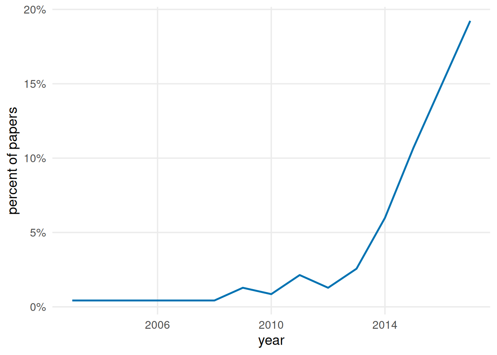
我们使用的这类因果图也称为有向无环图（DAG）1。 这类图之所以”有向”，是因为其中的箭头指向特定方向。 之所以”无环”，是因为它们不会形成循环；例如，一个变量不能导致自身。 DAG 可用于多种问题，但我们特别关注的是因果 DAG。 这类 DAG 有时称为结构因果模型（SCM），因为它们对问题的因果结构进行建模 (Hernán and Robins 2021; Pearl et al. 2021)。
DAG 描绘变量之间的因果关系。 在视觉上，它们通过边和节点表示变量及其关系。 边是从一个变量指向另一个变量的箭头，有时称为弧或直接称为箭头。 节点是变量本身，有时称为顶点、点或直接称为变量。 在 Figure 4.2 中，有 x 和 y 两个节点，以及一条从 x 指向 y 的边。 这里我们表示 x 导致 y。 y “听从” x (Pearl et al. 2021)。
library(ggdag)
dagify(y ~ x, coords = time_ordered_coords()) |>
ggdag() +
theme_dag() +
expand_plot(expand_x = expansion(c(0.2, 0.2)))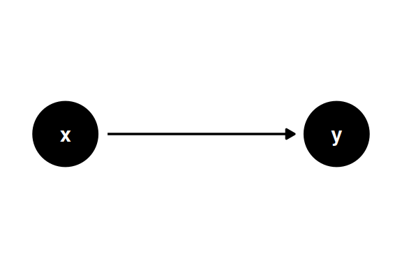
x 导致 y。
如果关注 x 对 y 的因果效应，我们就是在尝试估计该箭头所代表的数值。 不过，给定问题的因果结构中通常还存在许多其他变量和箭头。 一系列箭头称为路径。 DAG 中会出现三类路径：分叉、链和碰撞点（有时称为反向分叉）。
coords <- list(x = c(x = 0, y = 2, q = 1), y = c(x = 0, y = 0, q = 1))
fork <- dagify(
x ~ q,
y ~ q,
exposure = "x",
outcome = "y",
coords = coords
)
chain <- dagify(
q ~ x,
y ~ q,
exposure = "x",
outcome = "y",
coords = coords
)
collider <- dagify(
q ~ x + y,
exposure = "x",
outcome = "y",
coords = coords
)
dag_flows <- map(
list(fork = fork, chain = chain, collider = collider),
tidy_dagitty
) |>
map("data") |>
list_rbind(names_to = "dag") |>
mutate(dag = factor(dag, levels = c("fork", "chain", "collider")))
dag_flows |>
ggplot(aes(x = x, y = y, xend = xend, yend = yend)) +
geom_dag_edges(edge_width = 1) +
geom_dag_point() +
geom_dag_text() +
facet_wrap(~dag) +
expand_plot(
expand_x = expansion(c(0.2, 0.2)),
expand_y = expansion(c(0.2, 0.2))
) +
theme_dag()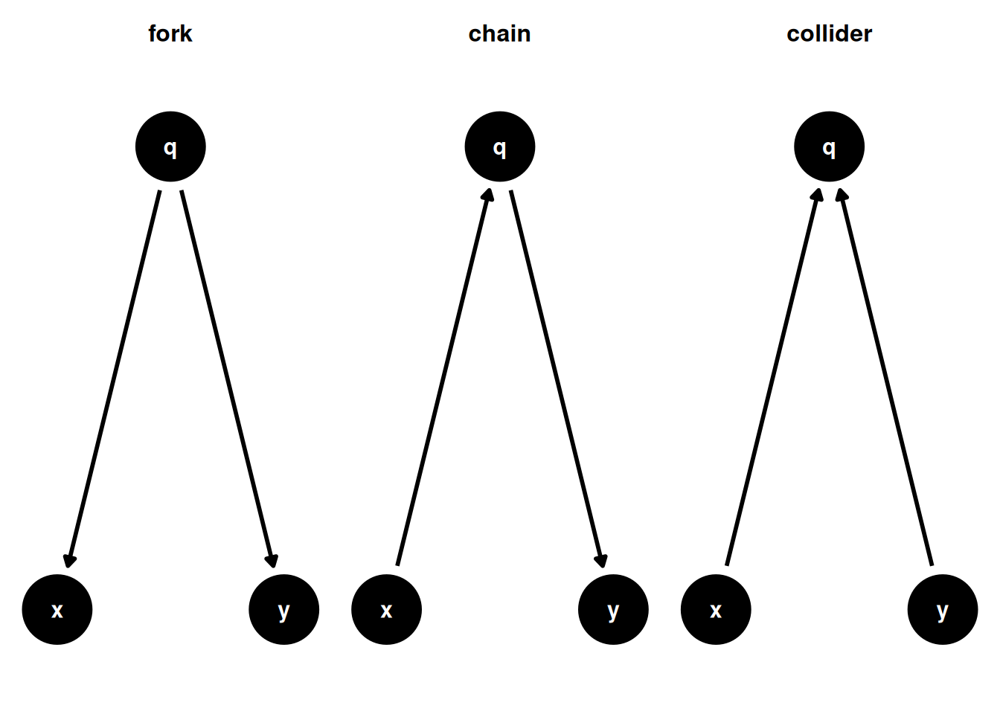
分叉表示两个变量具有共同原因。 这里，我们表示 q 同时导致 x 和 y，这正是混杂因素的传统定义。 之所以称为分叉，是因为从 x 到 y 的箭头方向不同。 另一方面，链表示一系列方向相同的箭头。 这里，q 称为中介变量：它位于从 x 到 y 的因果路径上。 在该图中，从 x 到 y 的唯一一条路径通过 q 中介。 最后，碰撞路径是两个箭头的箭头端在某个变量处相遇的路径。 由于因果关系始终沿时间向前，这自然意味着碰撞变量由另外两个变量导致。 这里，我们表示 x 和 y 都导致 q。 通常，q 本身也称为碰撞点。
如果熟悉心理学和其他社会科学领域常用的建模技术结构方程模型（SEM），你可能会注意到 SEM 与 DAG 之间的一些相似之处。 DAG 是一种非参数 SEM。 SEM 使用参数假设估计整张图。 而因果 DAG 不估计任何数值；从一个变量指向另一个变量的箭头，并不说明该关系的强度或函数形式，只表示我们认为这种关系存在。
DAG 的一项重要优势是，它们有助于识别偏倚来源，而且往往能提供如何处理偏倚的线索。 不过，只有心中有一个明确的因果问题时，讨论无偏效应估计才有意义。 由于每个箭头都代表一个原因，整张图处处都是因果关系；没有哪一条箭头本身必然有问题。 这里我们关注 x 对 y 的效应。 这个问题决定了哪些路径是我们关注的，哪些不是。
这三类路径对 x 与 y 之间的统计关系有不同含义。 在这些假设下，如果只考察两个变量之间的相关性：
x 指向 y 的箭头，x 和 y 仍会相关。x 和 y 仅通过 q 相关。x 和 y 不会相关。传递关联的路径称为开放路径。 不传递关联的路径称为闭合路径。 分叉和链是开放的，而碰撞路径是闭合的。
那么，是否应该调整 q？ 这取决于路径的性质。 分叉是混杂路径。 由于 q 同时导致 x 和 y，二者会产生虚假关联。 它们都包含来自共同原因 q 的信息。 这种共同的因果关系使 x 和 y 在统计上相关。 调整 q 会阻断混杂造成的偏倚，并给出 x 与 y 之间的真实关系。
可以使用多种技术对变量进行控制。 我们用”调整”或”控制”指代任何去除非关注变量影响的技术。
Figure 4.4 直观展示了这一效应。 这里 x 和 y 都是连续变量，根据 DAG 的定义，二者互不相关。 但 q 同时导致二者。 未调整效应存在偏倚，因为它包含从 x 经 q 到 y 的开放路径信息。 然而，在 q 的各水平内，x 和 y 互不相关。
set.seed(123)
library(patchwork)
n <- 1000
### q
q <- rbinom(n, size = 1, prob = 0.35)
###
### x
x <- 2 * q + rnorm(n)
###
### y
y <- -3 * q + rnorm(n)
###
confounder_data <- tibble(x, y, q = as.factor(q))
p1 <- confounder_data |>
ggplot(aes(x, y)) +
geom_point(alpha = 0.2) +
geom_smooth(method = "lm", se = FALSE, color = "black") +
facet_wrap(~"not adjusting for `q`\n(biased)")
p2 <- confounder_data |>
ggplot(aes(x, y, color = q)) +
geom_point(alpha = 0.2) +
geom_smooth(method = "lm", se = FALSE) +
facet_wrap(~"adjusting for `q`\n(unbiased)")
p1 + p2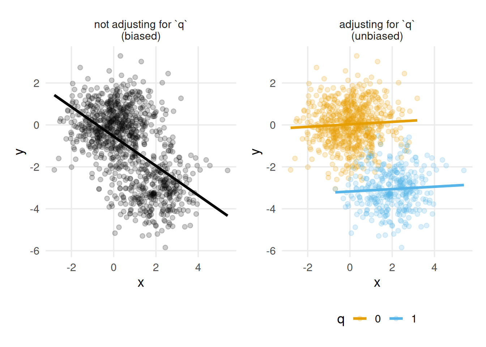
x 与 y 关系的两幅散点图。在分叉结构中，该关系受到 q 的偏倚影响；控制 q 后，可看到真实的零关联。
对于链，是否调整中介变量取决于研究问题。 这里，调整 q 会使 x 对 y 的效应估计为零。 由于 x 对 y 的唯一效应通过 q 产生，因此不会剩下其他效应。 x 通过 q 对 y 产生的效应称为间接效应，而 x 直接对 y 产生的效应称为直接效应。 如果只关注直接效应，控制 q 可能正是我们想要的。 如果想了解两种效应，就不应调整 q。 我们将在 ?sec-mediation 中进一步学习如何估计这些及其他中介效应。
Figure 4.5 直观展示了这一效应。 x 对 y 的未调整效应代表总效应。 由于总效应完全来自经 q 中介的路径，调整 q 后便不再存在关联。 这个零效应就是直接效应。 这两种效应都不是由偏倚造成的，只是分别回答了不同的研究问题。
### x
x <- rnorm(n)
###
### q
linear_pred <- 2 * x + rnorm(n)
prob <- 1 / (1 + exp(-linear_pred))
q <- rbinom(n, size = 1, prob = prob)
###
### y
y <- 2 * q + rnorm(n)
###
mediator_data <- tibble(x, y, q = as.factor(q))
p1 <- mediator_data |>
ggplot(aes(x, y)) +
geom_point(alpha = 0.2) +
geom_smooth(method = "lm", se = FALSE, color = "black") +
facet_wrap(~"not adjusting for `q`\n(total effect)")
p2 <- mediator_data |>
ggplot(aes(x, y, color = q)) +
geom_point(alpha = 0.2) +
geom_smooth(method = "lm", se = FALSE) +
facet_wrap(~"adjusting for `q`\n(direct effect)")
p1 + p2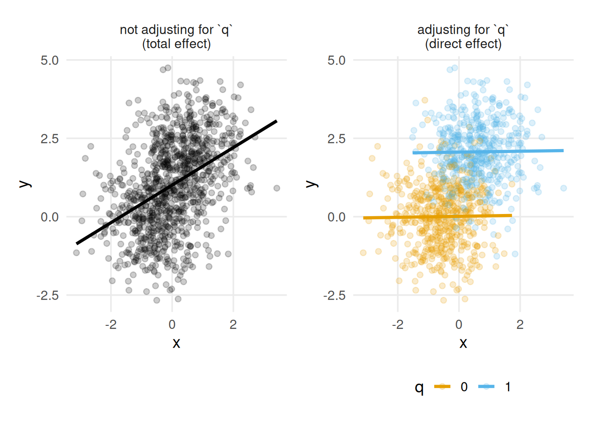
x 与 y 关系的两幅散点图。在链结构中，是否以及如何控制 q 取决于研究问题。不控制时，看到的是 x 对 y 的总效应，包括经 q 产生的间接效应；控制 q 后，看到的是 x 对 y 的直接（零）效应。
碰撞点则不同。 在 Figure 4.3 的碰撞 DAG 中，x 和 y 并不相关，但二者都导致 q。 调整 q 的效果与处理混杂时恰好相反：它会打开一条产生偏倚的路径。 有时，人们会画出因对碰撞点进行条件化而打开、连接 x 与 y 的路径。
当 x 和 y 为连续变量、q 为二元变量时，可以直观看到这一现象。 在 Figure 4.6 中，不纳入 q 时，x 与 y 之间没有关系。 这是正确结果。 然而，纳入 q 后，我们可以获得有关 x 和 y 的信息，二者看起来出现相关：在 x 的各水平下，q = 0 者的 y 水平更低。 关联似乎沿时间倒流。 当然，从因果角度看这不可能发生，因此控制 q 是错误的做法。 最终得到的 x 对 y 的效应存在偏倚。
### x
x <- rnorm(n)
###
### y
y <- rnorm(n)
###
### q
linear_pred <- 2 * x + 3 * y + rnorm(n)
prob <- 1 / (1 + exp(-linear_pred))
q <- rbinom(n, size = 1, prob = prob)
###
collider_data <- tibble(x, y, q = as.factor(q))
p1 <- collider_data |>
ggplot(aes(x, y)) +
geom_point(alpha = 0.2) +
geom_smooth(method = "lm", se = FALSE, color = "black") +
facet_wrap(~"not adjusting for `q`\n(unbiased)")
p2 <- collider_data |>
ggplot(aes(x, y, color = q)) +
geom_point(alpha = 0.2) +
geom_smooth(method = "lm", se = FALSE) +
facet_wrap(~"adjusting for `q`\n(biased)")
p1 + p2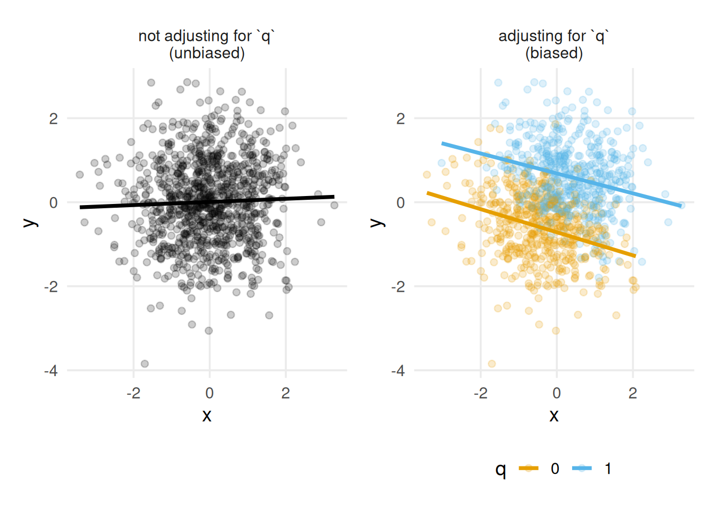
x 与 y 关系的两幅散点图。二者的未调整关系是无偏的；控制 q 后，会打开一条碰撞后门路径，使 x 与 y 的关系产生偏倚。
这怎么可能呢？ 由于 x 和 y 发生在 q 之前，q 不可能影响它们。 让我们把 DAG 横过来观察 Figure 4.7。 若将两个时间点分开来看，在时间点 1，q 尚未发生，x 与 y 互不相关。 到时间点 2，x 和 y 导致 q 发生。 但因果关系只沿时间向前。 后来发生的 q 无法改变 x 和 y 过去彼此独立发生这一事实。
coords <- list(x = c(x = 0, y = 2, q = 1), y = c(x = 0, y = 0, q = -1))
collider <- dagify(
q ~ x + y,
exposure = "x",
outcome = "y",
coords = time_ordered_coords()
)
collider_t <- collider |>
tidy_dagitty() |>
mutate(time = "time point 1", direction = NA, to = NA) |>
filter(name != "q")
t2 <- collider |>
tidy_dagitty() |>
mutate(time = "time point 2") |>
pull_dag_data()
collider_t$data <- bind_rows(collider_t$data, t2)
collider_t |>
mutate(deemphasize = (name %in% c("x", "y") & time == "time point 2")) |>
ggplot(aes(x = x, y = y, xend = xend, yend = yend)) +
geom_dag_edges(edge_width = 1, edge_color = "grey85") +
geom_dag_point(aes(color = deemphasize), show.legend = FALSE) +
geom_dag_text() +
facet_wrap(~time) +
theme_dag() +
scale_color_manual(values = c("TRUE" = "grey85", "FALSE" = "black"))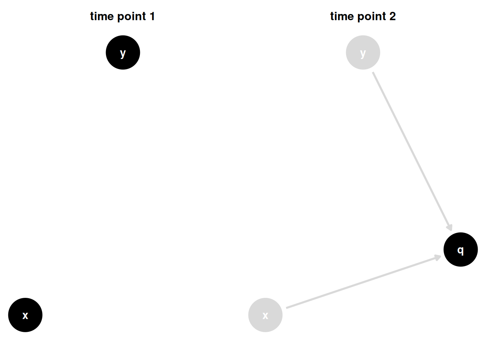
x 与 y 之间不存在关系；到时间点 2，二者都导致 q，但这不会改变时间点 1 已经发生的事实。
因果关系只向前发展。 但关联与时间无关。 它只是对变量之间数值关系的观察。 当我们控制未来变量时，就可能引入偏倚。 培养对此的直觉需要时间。 考虑这样一种情形：x 和 y 是 q 的仅有原因，且三个变量均为二元变量。 当 x 或 y 中任一个等于 1 时，q 就会发生。 若已知 q = 1 且 x = 0，那么从逻辑上讲必有 y = 1。 因此，知道 q 后，就能通过 x 获得有关 y 的信息。 这个例子较为极端，但它说明了这种有时称为碰撞点分层偏倚或选择偏倚的偏倚如何产生：对 q 进行条件化会提供有关 x 和 y 的统计信息，并扭曲二者的关系 (Banack et al. 2023)。
我们通常把可交换性称为无混杂假设。 实际上，这并不完全准确。 要使潜在结局具有可交换性，需要不存在开放的非因果路径 (Hernán and Robins 2021)。 很多时候，这些路径是混杂路径。 然而，对碰撞点进行条件化也可能打开路径。 尽管碰撞点并非混杂因素，这样做仍会在两组之间造成不可交换性：两组会在与暴露和结局有关的重要方面有所不同。
开放的非因果路径也称为后门路径。 我们会经常使用这一术语，因为它很好地概括了这个概念：任何使我们关注的效应估计产生偏倚的开放路径都属于后门路径。
因此，正确识别暴露与结局之间的因果结构，有助于我们：1）传达对变量间关系所作的假设；2）识别偏倚来源。 重要的是，在完成第 2 点时，我们往往还能依据第 1 点中的假设找出防止偏倚的方法。 对于 Figure 4.3 中三个简单 DAG，我们可以根据因果结构的性质判断是否应控制 q。 需要调整的一个或多个变量集合称为调整集。 即使在复杂情境中，DAG 也能帮助我们识别调整集 (Zander et al. 2019)。
DAG 不对交互作用或效应修饰作出陈述，尽管它们是推断的重要组成部分。 从技术上讲，交互作用涉及 DAG 中关系的函数形式。 正如无需在 DAG 中指定如何对变量建模（例如使用样条），我们也无需确定变量在统计上如何交互。 那是建模阶段需要处理的问题。
在因果推断中，我们以多种方式使用交互作用。 在一种极端情况下，它们只是函数形式问题：模型中纳入交互项，但通过边际化得到总体因果效应。 在另一种情况下，我们关注联合因果效应，其中发生交互的两个变量均具有因果作用。 介于两者之间时，可以使用交互项识别异质性因果效应，即效应随另一个不被假定为因果变量的变量而变化。 与因果推断中的许多工具一样，我们以多种方式使用同一种统计技术来回答不同问题。 我们将在?sec-interaction详细重访这一主题。
许多人曾尝试使用不同类型的弧、节点和其他标注在 DAG 中表达交互作用，但尚无任何方法成为公认的首选方案 (Weinberg 2007; Nilsson et al. 2020)。
下面来看一个 R 示例。 我们将学习构建和可视化 DAG，并识别调整集等重要信息。
首先考虑一个研究问题：考试当天早晨收听喜剧播客，是否会提高研究生的考试成绩？ 可以使用 Section 1.3 中介绍的方法将其绘制成图（Figure 4.8）。

我们将使用 ggdag 制作 DAG。 ggdag 将 R 中功能强大的可视化工具 ggplot2 与 dagitty 连接起来；后者是一个包含复杂 DAG 查询算法的 R 包。
我们将使用 dagify() 函数创建 DAG 对象。dagify() 返回一个同时适用于 dagitty 和 ggdag 包的 dagitty 对象。 dagify() 函数接受以逗号分隔的公式来指定原因和结果；公式左侧定义结果，右侧列出导致该结果的所有因素。 这与在 R 中为大多数回归模型指定的公式类型相同。
dagify(
effect1 ~ cause1 + cause2 + cause3,
effect2 ~ cause1 + cause4,
...
)哪些因素会导致研究生在考试当天早晨收听播客？ 哪些因素可能使研究生在考试中取得好成绩？ 让我们在这里提出一些假设。
library(ggdag)
dagify(
podcast ~ mood + humor + prepared,
exam ~ mood + prepared
)dag {
exam
humor
mood
podcast
prepared
humor -> podcast
mood -> exam
mood -> podcast
prepared -> exam
prepared -> podcast
}在上述代码中，我们假设：
请注意，exam 方程中没有 podcast；这意味着我们假设播客与考试成绩之间不存在因果关系。
还经常需要向 dagify() 提供一些其他有用参数：
exposure 和 outcome：告知 ggdag 研究问题中的暴露和结局变量，这是许多重要 DAG 查询所必需的。latent：该参数用于告知 ggdag，DAG 中的某些变量未被测量。 latent 有助于根据实际拥有的数据识别有效调整集。coords：变量的坐标。 如下文所述，可以选择算法布局或手动布局。 这里使用 time_ordered_coords()。labels：变量标签的字符向量。让我们使用其中一些属性创建 DAG 对象 podcast_dag，然后用 ggdag() 将其可视化。 ggdag() 返回一个 ggplot 对象，因此可以向图中添加主题等其他图层。
podcast_dag <- dagify(
podcast ~ mood + humor + prepared,
exam ~ mood + prepared,
coords = time_ordered_coords(
list(
# time point 1
c("prepared", "humor", "mood"),
# time point 2
"podcast",
# time point 3
"exam"
)
),
exposure = "podcast",
outcome = "exam",
labels = c(
podcast = "podcast",
exam = "exam score",
mood = "mood",
humor = "humor",
prepared = "prepared"
)
)
ggdag(podcast_dag, use_labels = TRUE, use_text = FALSE) +
theme_dag()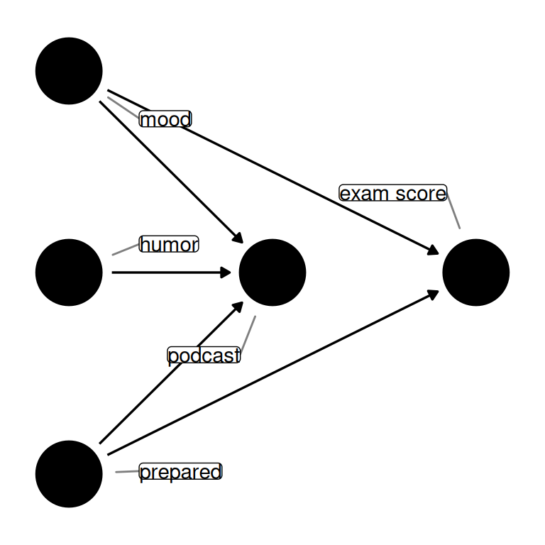
本章余下部分将使用 theme_dag()，这是 ggdag 中专为 DAG 设计的 ggplot 主题。
theme_set(
theme_dag() %+replace%
# also add some additional styling
theme(
legend.position = "bottom",
strip.text.x = element_text(margin = margin(2, 0, 2, 0, "mm"))
)
)无需为 ggdag 指定坐标。 如果不指定，它会使用专为自动布局设计的算法。 此类算法有很多，分别关注布局的不同方面，例如形状、节点间距、尽量减少边的交叉等。这些布局算法通常含有随机成分，因此若希望得到相同结果，最好设置随机种子。
# no coordinates specified
set.seed(123)
pod_dag <- dagify(
podcast ~ mood + humor + prepared,
exam ~ mood + prepared
)
# automatically determine layouts
pod_dag |>
ggdag(text_size = 2.8)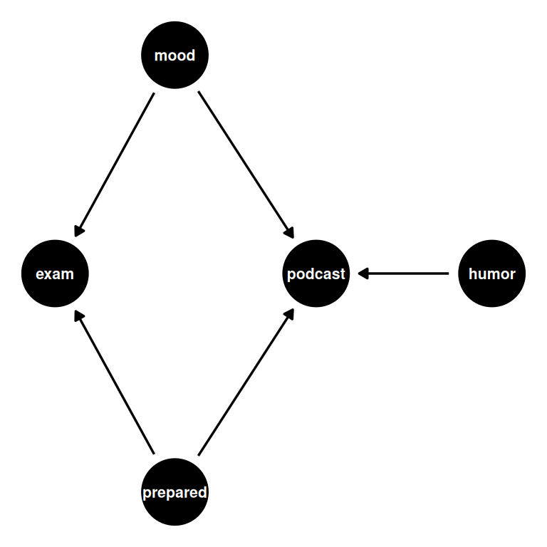
也可以指定特定布局，例如 DAG 中常用的 Sugiyama 算法 (Sugiyama et al. 1981)。
pod_dag |>
ggdag(layout = "sugiyama", text_size = 2.8)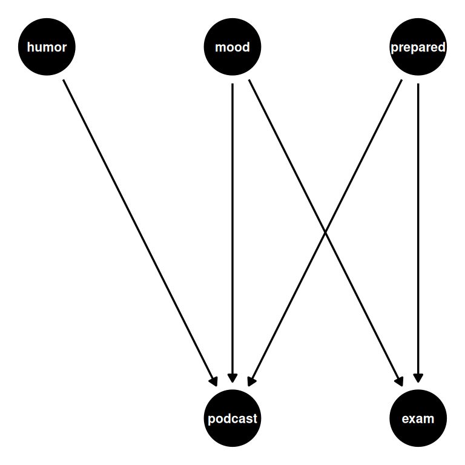
对于因果 DAG，时间顺序布局算法通常最合适，可以使用 time_ordered_coords() 或 layout = "time_ordered" 指定。 下文将更详细地讨论时间顺序。 前面我们明确告知 ggdag 每个变量所在的时间点，但这并非必需。 不过请注意，时间顺序算法会将 podcast 和 exam 放在同一时间点，因为二者互不导致（因此一个不会先于另一个）。 我们知道事实并非如此：收听播客发生在参加考试之前。
pod_dag |>
ggdag(layout = "time_ordered", text_size = 2.8)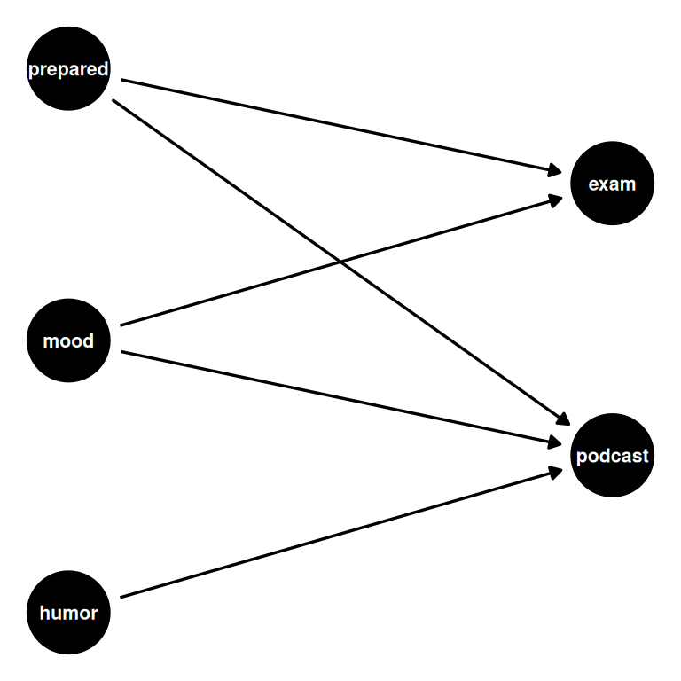
可以使用列表或数据框手动指定坐标，并将其传给 dagify() 的 coords 参数。 此外，由于 ggdag 基于 dagitty，可以使用 dagitty Web 应用通过图形界面创建和组织 DAG，再将结果导出为供 ggdag 使用的 dagitty 代码。
算法布局非常适合快速可视化 DAG 或特别复杂的图。 当需要分享 DAG 时，通常最好更有意识地安排布局，例如手动指定坐标。 time_ordered_coords() 往往兼具两者优点，本书大多数 DAG 都将使用它。
我们已经为该问题指定了 DAG，并告知 ggdag 关注的暴露和结局。 根据该 DAG，收听播客与考试成绩之间不存在直接因果关系。 是否还有其他开放路径？ ggdag_paths() 接受一个 DAG 并将其中的开放路径可视化。 在 Figure 4.10 中，可以看到两条开放路径：podcast <- mood -> exam 和 podcast <- prepared -> exam。 两者都是分叉，即混杂路径。 由于收听播客与考试成绩之间不存在因果关系，唯一的开放路径便是这两条混杂的后门路径。
podcast_dag |>
# show the whole dag as a light gray "shadow"
# rather than just the paths
ggdag_paths(shadow = TRUE, use_text = FALSE, use_labels = TRUE)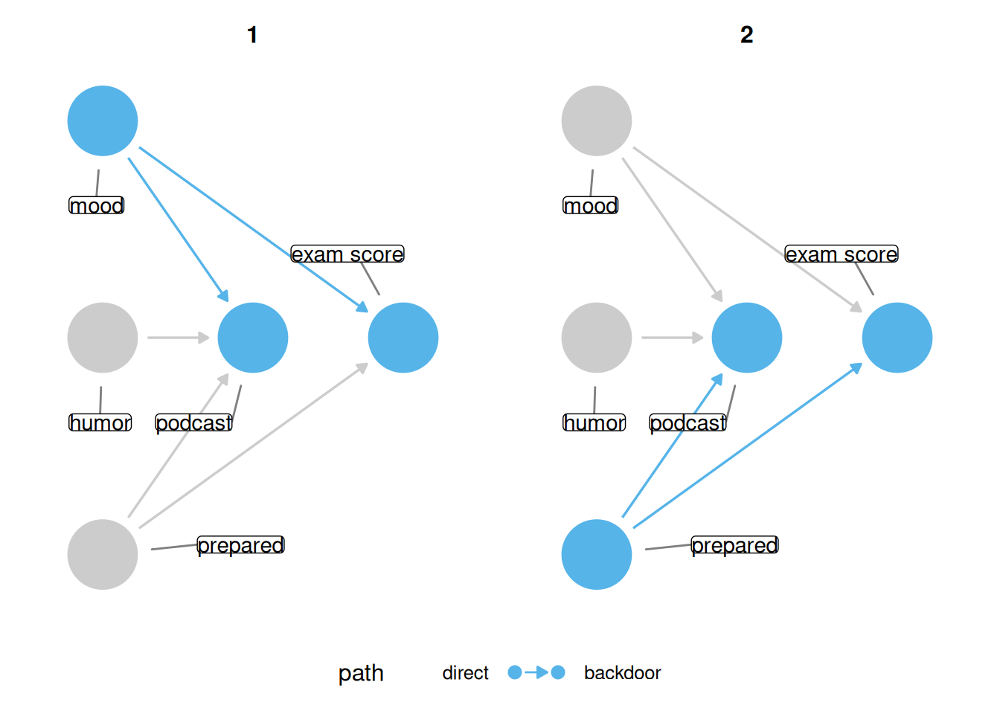
ggdag_paths() 将 DAG 中的开放路径可视化。podcast_dag 中有两条开放路径：由 mood 形成的分叉和由 prepared 形成的分叉。
dagify() 返回一个 dagitty() 对象，但 ggdag 在底层会将 dagitty 对象转换为整洁 DAG；这种结构同时保存 dagitty 对象和描述该 DAG 的 dataframe。 如果希望以编程方式操作 DAG，这会非常方便。
podcast_dag_tidy <- podcast_dag |>
tidy_dagitty()
podcast_dag_tidy# DAG:
# A `dagitty` DAG with: 5 nodes and 5 edges
# Exposure: podcast
# Outcome: exam
#
# Data:
# A tibble: 7 × 8
name x y direction to xend yend label
<chr> <int> <int> <fct> <chr> <int> <int> <chr>
1 exam 3 0 <NA> <NA> NA NA exam…
2 humor 1 0 -> podc… 2 0 humor
3 mood 1 1 -> exam 3 0 mood
4 mood 1 1 -> podc… 2 0 mood
5 podcast 2 0 <NA> <NA> NA NA podc…
6 prepar… 1 -1 -> exam 3 0 prep…
7 prepar… 1 -1 -> podc… 2 0 prep…
#
# ℹ Use `pull_dag() (`?pull_dag`)` to retrieve the DAG object and `pull_dag_data() (`?pull_dag_data`)` for the data frame大多数快速绘图函数会先将尚未转换的 dagitty 对象转换为整洁 DAG，再以某种方式操作数据。 例如，dag_paths() 是 ggdag_paths() 的底层函数；它返回包含路径数据的整洁 DAG。 可以直接对这些对象使用多种 dplyr 函数。
podcast_dag_tidy |>
dag_paths() |>
filter(set == 2, path == "open path")# DAG:
# A `dagitty` DAG with: 5 nodes and 5 edges
# Exposure: podcast
# Outcome: exam
# Paths: 2 open paths: {podcast <- mood -> exam}, {podcast <- prepared -> exam}
#
# Data:
# A tibble: 4 × 11
set name x y direction to xend yend
<chr> <chr> <int> <int> <fct> <chr> <int> <int>
1 2 exam 3 0 <NA> <NA> NA NA
2 2 podcast 2 0 <NA> <NA> NA NA
3 2 prepar… 1 -1 -> exam 3 0
4 2 prepar… 1 -1 -> podc… 2 0
# ℹ 3 more variables: label <chr>, path <chr>,
# path_type <chr>
#
# ℹ Use `pull_dag() (`?pull_dag`)` to retrieve the DAG object and `pull_dag_data() (`?pull_dag_data`)` for the data frame整洁 DAG 并非纯数据框，但可以使用 pull_dag_data() 或 pull_dag() 提取 dataframe 或 dagitty 对象并直接进行操作。 当希望使用 dagitty 函数时，pull_dag() 很有用：
library(dagitty)
podcast_dag_tidy |>
pull_dag() |>
paths()$paths
[1] "podcast <- mood -> exam"
[2] "podcast <- prepared -> exam"
$open
[1] TRUE TRUE后门路径会污染 podcast 与 exam 之间的统计关联，因此必须对其进行控制。 ggdag_adjustment_set() 可视化 DAG 所蕴含的任何有效调整集。 Figure 4.11 以方形表示已调整变量。 从已调整变量发出的所有箭头都从 DAG 中移除，因为路径在该变量处不再开放。
ggdag_adjustment_set(
podcast_dag,
use_text = FALSE,
use_labels = TRUE
)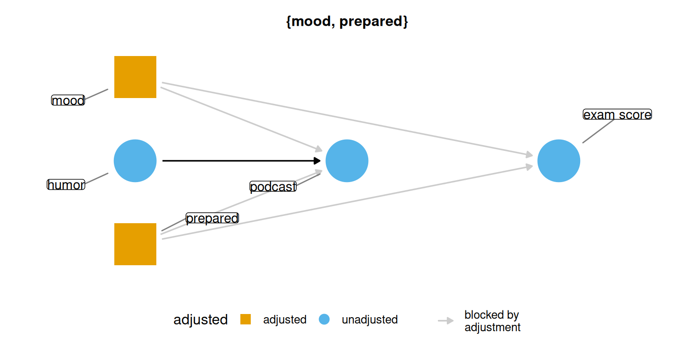
mood 和 prepared。
Figure 4.11 展示了最小调整集。 默认情况下，ggdag 返回能够以尽可能少的变量闭合所有后门路径的一个或多个集合。 在该 DAG 中，只有一个集合：mood 和 prepared。 这个集合很合理，因为存在两条后门路径，而除暴露和结局外，路径上的其他变量只有这两个。 因此，为获得有效估计，至少必须同时控制二者。
ggdag() 及其相关函数通常使用 tidy_dagitty() 和 dag_*() 或 node_*() 函数改变底层数据框。 类似地，快速绘图函数使用 ggdag 的 geom 将所得 DAG 可视化。 换言之，可以直接在 ggdag 中使用日常所用的数据操作和可视化策略。
下面是 ggdag_adjustment_set() 工作过程的精简版本：
podcast_dag_tidy |>
# add adjustment sets to data
dag_adjustment_sets() |>
ggplot(aes(
x = x,
y = y,
xend = xend,
yend = yend,
color = adjusted,
shape = adjusted
)) +
# ggdag's custom geoms: add nodes, edges, and labels
geom_dag_point() +
# remove adjusted paths
geom_dag_edges_link(data = \(.df) filter(.df, adjusted != "adjusted")) +
geom_dag_label_repel() +
# you can use any ggplot function, too
facet_wrap(~set) +
scale_shape_manual(values = c(adjusted = 15, unadjusted = 19))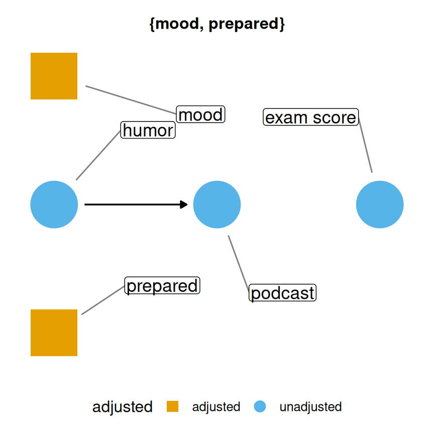
最小调整集只是有效调整集的一种 (Zander et al. 2019)。 有时，其他变量组合也能得到无偏效应估计。 ggdag 还提供另外两种选择：完整调整集和规范调整集。 完整调整集是能够构成有效集合的所有变量组合。
ggdag_adjustment_set(
podcast_dag,
use_text = FALSE,
use_labels = TRUE,
# get full adjustment sets
type = "all"
)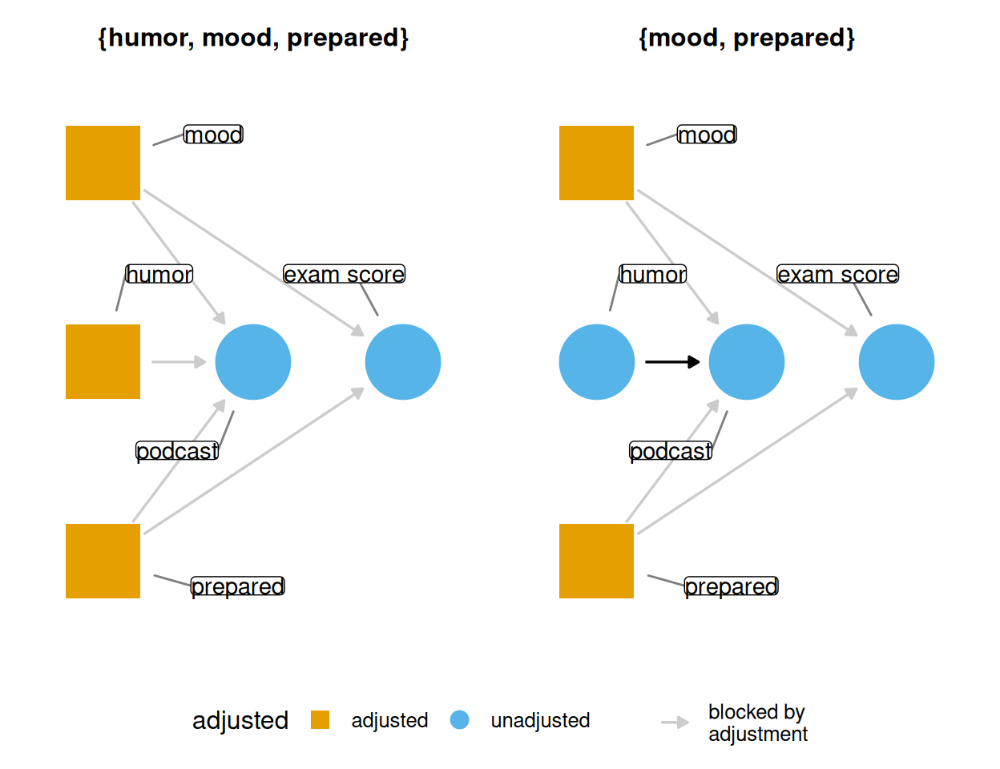
podcast_dag 的所有有效调整集。
事实证明，也可以控制 humor。
规范调整集稍微复杂一些：它由暴露和结局所有可能的祖先变量减去任何可能的后代变量构成。 在完全饱和的 DAG 中（每个节点都导致时间上位于其后的所有事物），规范调整集就是最小调整集。
ggdag 中的大多数函数在底层使用 dagitty。 直接调用 dagitty 函数通常很有帮助。
adjustmentSets(podcast_dag, type = "canonical"){ humor, mood, prepared }让我们根据拟议 DAG 模拟一些数据，看看实践中如何控制最小调整集。
set.seed(10)
sim_data <- podcast_dag |>
simulate_data()
sim_data# A tibble: 500 × 5
exam humor mood podcast prepared
<dbl> <dbl> <dbl> <dbl> <dbl>
1 -0.435 0.263 -0.100 -0.630 1.07
2 -0.593 0.317 0.143 -1.55 0.0640
3 0.786 1.97 -0.591 -0.318 -0.439
4 -0.103 2.86 -0.139 1.07 0.754
5 -0.614 -2.39 0.702 0.464 0.356
6 1.01 1.21 0.910 0.769 0.561
7 0.167 -1.37 -0.559 -0.866 0.214
8 1.16 0.164 -0.743 0.969 -1.67
9 0.650 0.215 -0.248 0.691 -0.303
10 0.156 0.713 1.19 -1.02 -0.219
# ℹ 490 more rowsFigure 4.13 展示了使用基于该 DAG 的模拟数据所得估计值的森林图。 其中一个估计未经调整，另一个对 mood 和 prepared 进行了调整。 请注意，未调整估计产生了虚假效应（已知真实值为 0，却估计为 -0.1）。 相比之下，按照 ggdag_adjustment_set() 的建议调整这两个变量后，估计不再是虚假的（更接近 0）。
## Model that does not close backdoor paths
library(broom)
unadjusted_model <- lm(exam ~ podcast, sim_data) |>
tidy(conf.int = TRUE) |>
filter(term == "podcast") |>
mutate(formula = "unadjusted")
## Model that closes backdoor paths
adjusted_model <- lm(exam ~ podcast + mood + prepared, sim_data) |>
tidy(conf.int = TRUE) |>
filter(term == "podcast") |>
mutate(formula = "mood + prepared")
bind_rows(
unadjusted_model,
adjusted_model
) |>
ggplot(aes(x = estimate, y = formula, xmin = conf.low, xmax = conf.high)) +
geom_vline(xintercept = 0, linewidth = 1, color = "grey80") +
geom_pointrange(size = 1) +
theme_minimal(18) +
labs(
y = NULL,
caption = "correct effect size: 0"
)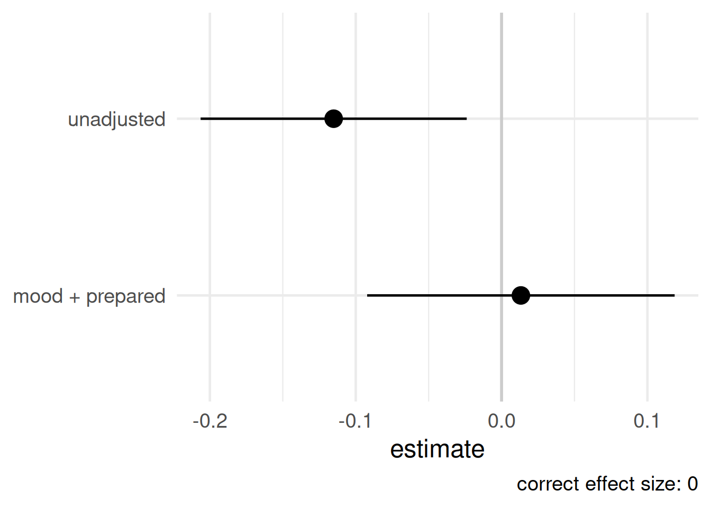
当然，我们知道当前使用的是真实 DAG。 假设并不知道真实 DAG (Figure 4.9)， 而是画出了 Figure 4.14。
podcast_dag_wrong <- dagify(
podcast ~ humor + prepared,
exam ~ prepared,
coords = time_ordered_coords(
list(
# time point 1
c("prepared", "humor"),
# time point 2
"podcast",
# time point 3
"exam"
)
),
exposure = "podcast",
outcome = "exam",
labels = c(
podcast = "podcast",
exam = "exam score",
humor = "humor",
prepared = "prepared"
)
)
ggdag(podcast_dag_wrong, use_labels = TRUE, use_text = FALSE) +
theme_dag()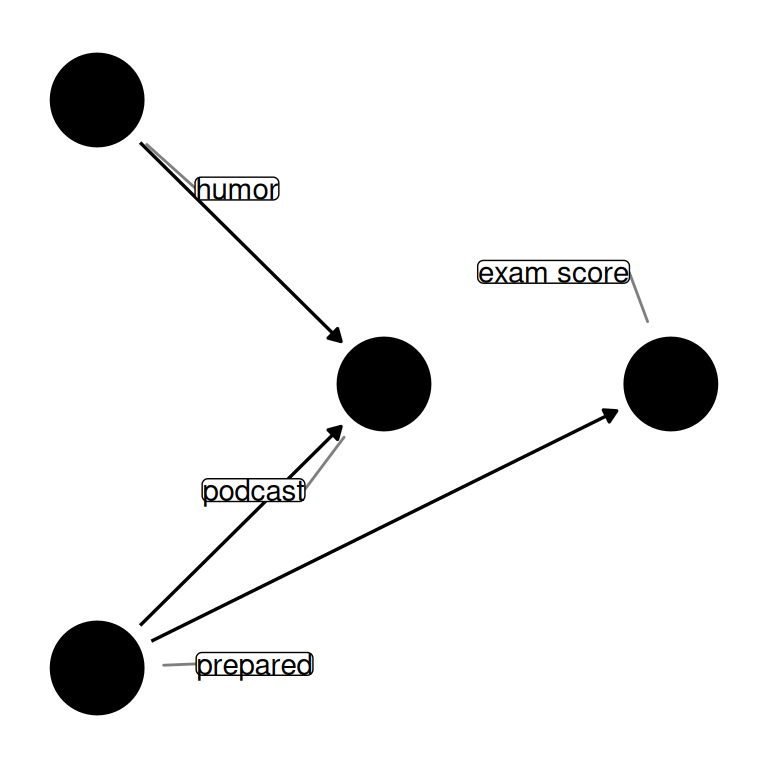
由于 DAG 是错误的，它无法帮助我们得到正确答案。 它表明只需调整 prepared，但我们遗漏了一条对该关系造成混杂的因果路径。 此时，两个估计都不正确。
## Model that does not close backdoor paths
library(broom)
unadjusted_model <- lm(exam ~ podcast, sim_data) |>
tidy(conf.int = TRUE) |>
filter(term == "podcast") |>
mutate(formula = "unadjusted")
## Model that closes backdoor paths
adjusted_model <- lm(exam ~ podcast + prepared, sim_data) |>
tidy(conf.int = TRUE) |>
filter(term == "podcast") |>
mutate(formula = "prepared")
bind_rows(
unadjusted_model,
adjusted_model
) |>
ggplot(aes(x = estimate, y = formula, xmin = conf.low, xmax = conf.high)) +
geom_vline(xintercept = 0, linewidth = 1, color = "grey80") +
geom_pointrange(size = 1) +
theme_minimal(18) +
labs(
y = NULL,
caption = "correct effect size: 0"
)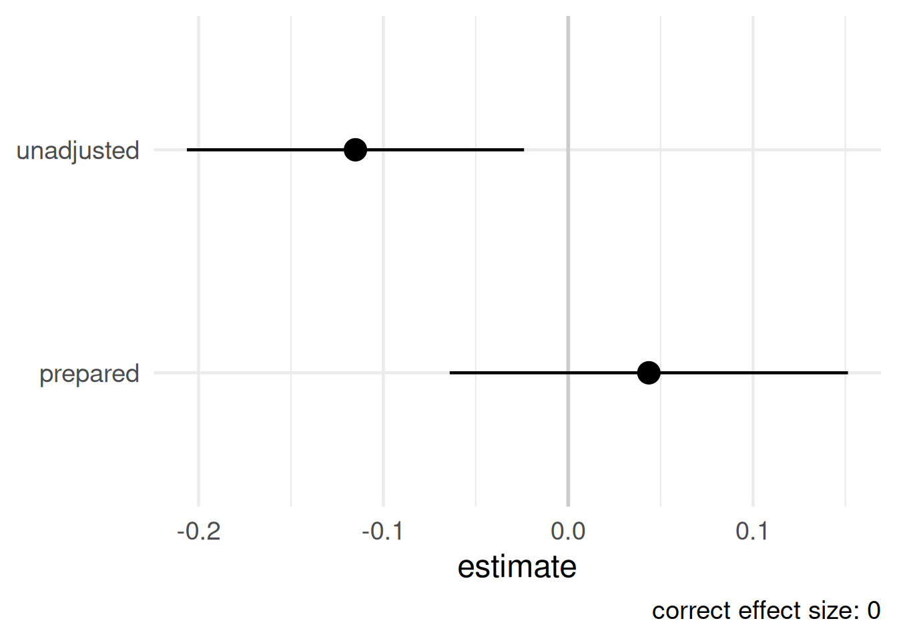
在 podcast_dag 中，mood 和 prepared 是直接混杂因素：它们分别直接指向 podcast 和 exam。 后门路径往往更加复杂。 让我们添加两个新变量 alertness 和 skills_course 来考虑这种情况。 alertness 表示良好情绪带来的清醒感，因此存在从 mood 指向 alertness 的箭头。 skills_course 表示学生是否参加过大学学习技能课程并学会时间管理技巧。 现在，skills_course 使学生既能腾出时间收听播客，也能为考试做好准备。 mood 和 prepared 不再是直接混杂因素，而是位于一条更复杂后门路径上的两个变量。 此外，我们还添加了一条从 humor 指向 mood 的箭头。 请看 Figure 4.16。
podcast_dag2 <- dagify(
podcast ~ mood + humor + skills_course,
alertness ~ mood,
mood ~ humor,
prepared ~ skills_course,
exam ~ alertness + prepared,
coords = time_ordered_coords(),
exposure = "podcast",
outcome = "exam",
labels = c(
podcast = "podcast",
exam = "exam score",
mood = "mood",
alertness = "alertness",
skills_course = "college\nskills course",
humor = "humor",
prepared = "prepared"
)
)
ggdag(podcast_dag2, use_labels = TRUE, use_text = FALSE)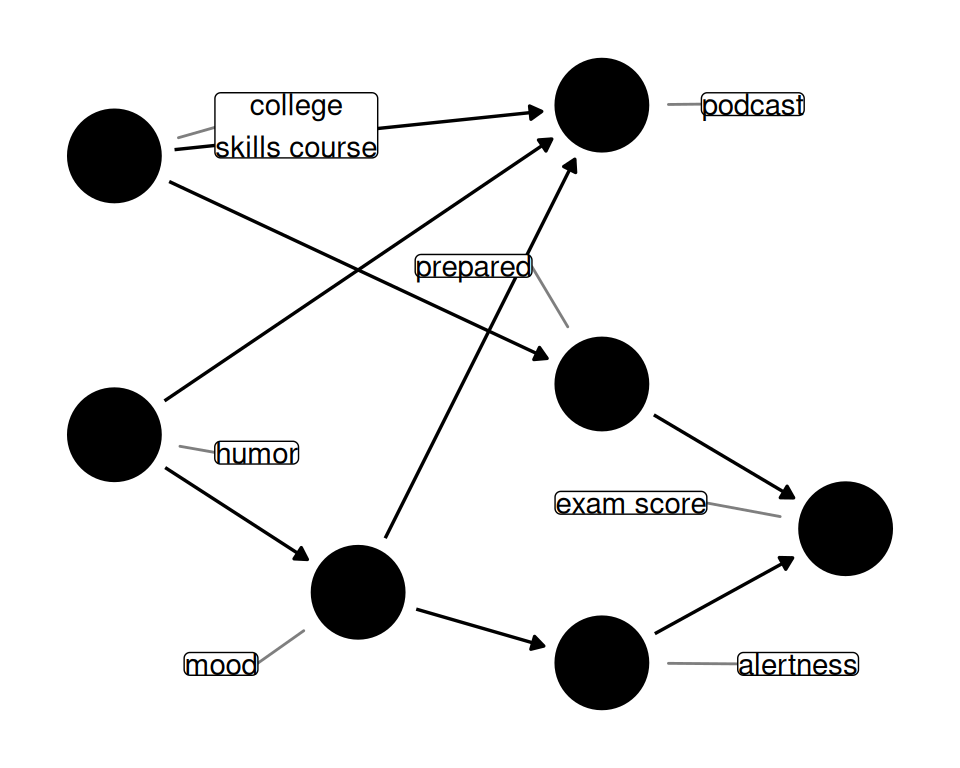
podcast_dag 的扩展版本，新增两个变量：表示大学学习技能课程的 skills_course 和 alertness。
现在需要闭合三条后门路径：podcast <- humor -> mood -> alertness -> exam, podcast <- mood -> alertness -> exam, andpodcast <- skills_course -> prepared -> exam。
ggdag_paths(podcast_dag2, use_labels = TRUE, use_text = FALSE, shadow = TRUE)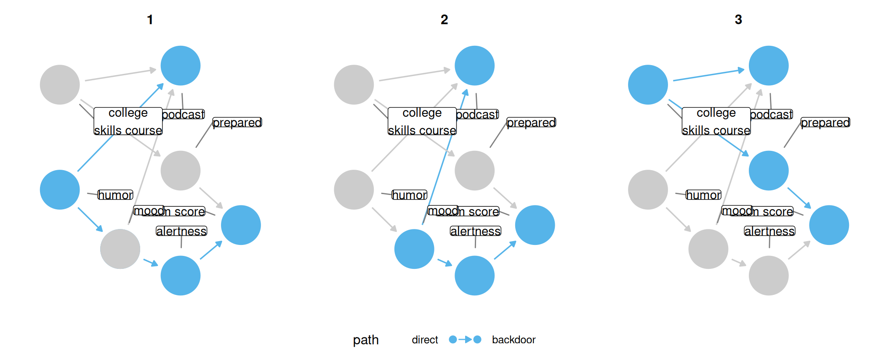
podcast_dag2 中的三条开放路径。由于 podcast 对 exam 没有效应，三条路径均为后门路径；必须将其闭合才能得到正确效应。
有四个最小调整集可以闭合全部三条路径（此外还有 18 个完整调整集！）。 最小调整集为 alertness + prepared, alertness + skills_course, mood + prepared, mood + skills_course。 现在可以通过多种方式阻断开放路径。 mood 和 prepared 仍然有效，但现在还有其他选择。 值得注意的是，prepared 和 alertness 可能与 podcast 同时发生，甚至发生在其后。 skills_course 和 mood 仍然先于 podcast 和 exam 发生，因此基本思路不变：混杂路径始于暴露和结局之前。
ggdag_adjustment_set(podcast_dag2, use_labels = TRUE, use_text = FALSE)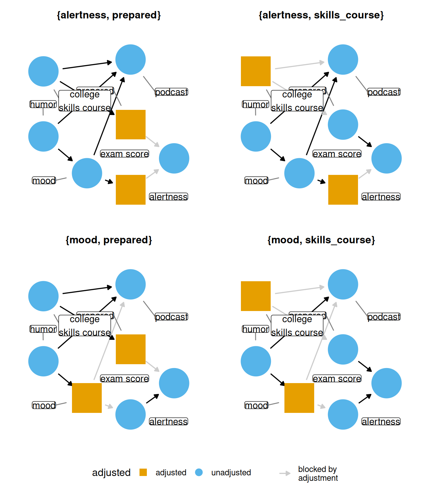
如何在这些调整集之间作出选择，需要判断：如果所有数据都被完美测量、DAG 正确且模型设定正确，那么使用哪个都无关紧要。 每个调整集都会产生无偏估计。 但这三个假设通常都在某种程度上不成立。 让我们考虑经过 skills_course 和 prepared 的路径。 与评估某人为考试准备得如何相比，我们可能更容易准确判断其是否参加过大学学习技能课程。 在这种情况下，包含 skills_course 的调整集是更好的选择。 但我们也可能更了解准备程度与考试结果之间的关系。 如果已测量准备程度，控制它可能更好。 同时纳入两个变量则可兼得二者之长：借助对 skills_course 更准确的测量以及对 prepared 更好的建模，我们或许更有可能最大限度减少该路径造成的混杂。
选择偏倚是调整碰撞点所诱发偏倚的另一种名称 (Lu et al. 2022)。 之所以称为”选择偏倚”，是因为碰撞点诱发偏倚的一种常见形式，是研究设计本身对某个变量进行了分层，即选择进入研究。 让我们在原始 podcast_dag 的基础上增加一个变量：学生是否参加考试。 此时，podcast 对 exam 存在间接效应：收听播客会影响学生是否参加考试。 未参加考试者缺少 exam 的真实结果；由于只研究确实参加考试的人，我们实际上对该变量进行了分层。
podcast_dag3 <- dagify(
podcast ~ mood + humor + prepared,
exam ~ mood + prepared + showed_up,
showed_up ~ podcast + mood + prepared,
coords = time_ordered_coords(
list(
# time point 1
c("prepared", "humor", "mood"),
# time point 2
"podcast",
"showed_up",
# time point 3
"exam"
)
),
exposure = "podcast",
outcome = "exam",
labels = c(
podcast = "podcast",
exam = "exam score",
mood = "mood",
humor = "humor",
prepared = "prepared",
showed_up = "showed up"
)
)
ggdag(podcast_dag3, use_labels = TRUE, use_text = FALSE)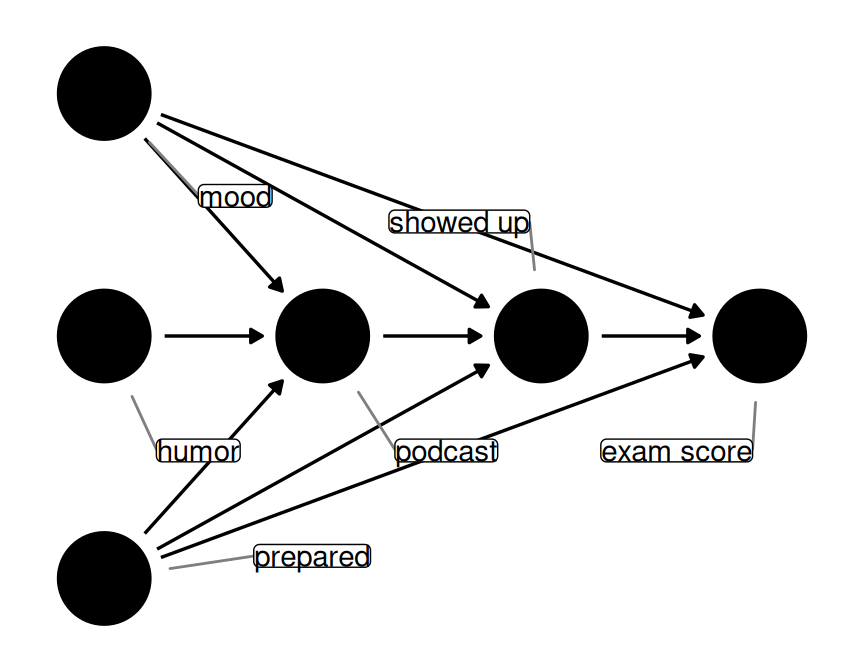
podcast_dag 的另一个变体，这次包含了对参加考试者的内在分层。podcast 对 exam 仍无直接效应，但存在经 showed_up 产生的间接效应。
问题在于，showed_up 既是碰撞点又是中介变量：对其分层会在 DAG 的许多变量之间诱发关系，同时阻断 podcast 对 exam 的间接效应。 幸运的是，调整集能够处理第一个问题；由于 showed_up 发生在 exam 之前，暴露与结局之间发生碰撞偏倚的风险较低。 遗憾的是，我们无法计算 podcast 对 exam 的总效应，因为其中一部分效应缺失：间接效应在 showed_up 处被闭合。
podcast_dag3 |>
adjust_for("showed_up") |>
ggdag_adjustment_set(use_text = FALSE, use_labels = TRUE)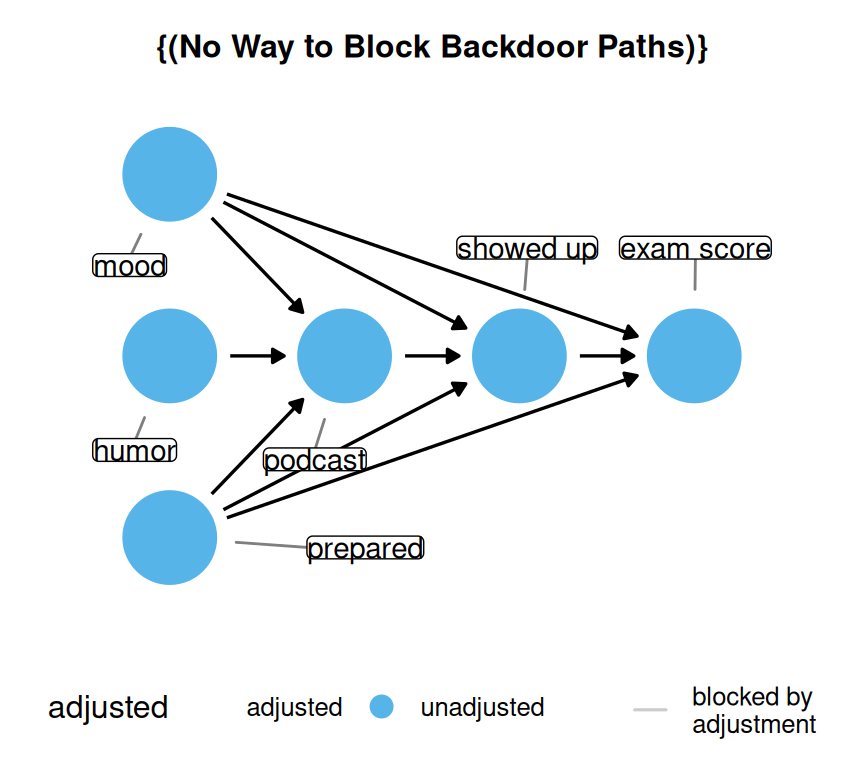
podcast_dag3 的调整集。在这种情况下，无法恢复 podcast 对 exam 总效应的无偏估计。
在这种情况下，有时仍可通过改变希望估计的目标估计量来估计效应。 由于缺少间接效应，我们无法计算总效应，但仍可计算 podcast 对 exam 的直接效应。
podcast_dag3 |>
adjust_for("showed_up") |>
ggdag_adjustment_set(effect = "direct", use_text = FALSE, use_labels = TRUE)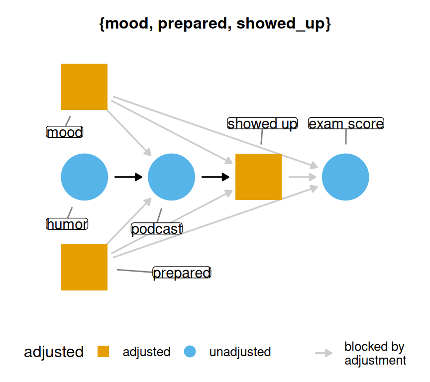
podcast_dag3 的调整集。存在一个可用于估计 podcast 对 exam 直接效应的最小调整集。
人们经常讨论的一种特殊选择偏倚是 M 偏倚。 之所以称为 M 偏倚，是因为从上到下排列时其形状像字母 M。
m_bias() |>
ggdag()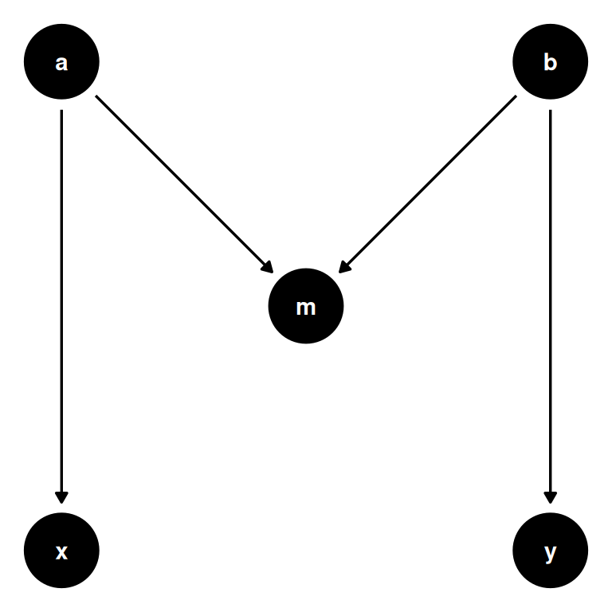
ggdag 提供多个用于演示基本因果结构的快捷 DAG，包括 confounder_triangle()、collider_triangle()、m_bias() 和 butterfly_bias()。
M 偏倚在理论上的有趣之处在于，m 是一个碰撞点，却发生在 x 和 y 之前。 请记住，关联会在碰撞点处被阻断，因此 x 与 y 之间不存在开放路径。
paths(m_bias())$paths
[1] "x <- a -> m <- b -> y"
$open
[1] FALSE让我们聚焦于播客–考试 DAG 中的 mood 路径。 如果我们对情绪的判断有误，真实关系其实呈 M 形，会怎样？ 假设 mood 并不导致 podcast 和 exam，而是由 podcast 和 exam 的两个共同原因 u1 和 u2 导致，如 Figure 4.23 所示。 我们不知道 u1 和 u2 是什么，也没有测量它们。 与上面一样，该 DAG 子集中没有开放路径。
podcast_dag4 <- dagify(
podcast ~ u1,
exam ~ u2,
mood ~ u1 + u2,
coords = time_ordered_coords(list(
c("u1", "u2"),
"mood",
"podcast",
"exam"
)),
exposure = "podcast",
outcome = "exam",
labels = c(
podcast = "podcast",
exam = "exam score",
mood = "mood",
u1 = "unmeasured",
u2 = "unmeasured"
),
# we don't have them measured
latent = c("u1", "u2")
)
ggdag(podcast_dag4, use_labels = TRUE, use_text = FALSE)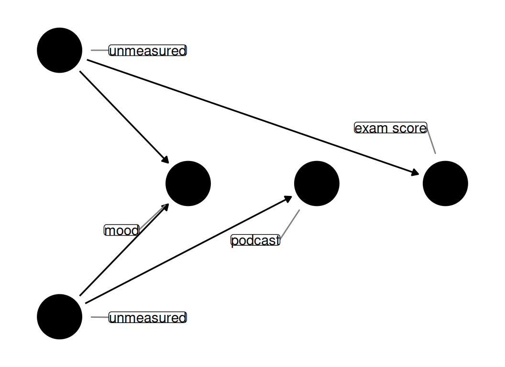
mood 是 M 形路径上的碰撞点。
当我们认为原始 DAG 正确时，问题就出现了：mood 位于调整集中，所以我们对其进行控制。 但这会诱发偏倚！ 它打开 u1 与 u2 之间的路径，从而形成一条从 podcast 到 exam 的路径。 如果测量了 u1 或 u2 中任一个，就可以通过调整它们来闭合该路径，但实际并未测量。 因此无法闭合这条开放路径。
podcast_dag4 |>
adjust_for("mood") |>
ggdag_adjustment_set(use_labels = TRUE, use_text = FALSE)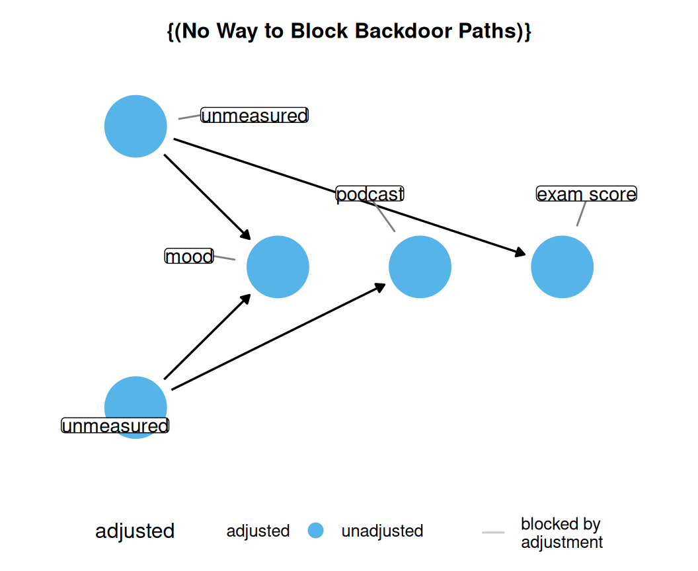
mood 为碰撞点时的调整集。如果控制 mood，却不了解或未测量 mood 的原因，就无法闭合因调整碰撞点而打开的后门路径。
当然，这里最好的做法是完全不控制 mood。 但有时这并非可选项。 设想这种结构不是发生在 mood，而是 showed_up 的真实结构：由于我们天然控制了 showed_up，又没有未测量变量，研究结果将始终存在偏倚。 判断自己是否处于这种情形非常重要，这样才能通过敏感性分析评估效应究竟会有多大偏倚。
让我们考虑 M 偏倚的一种变体：mood 导致 podcast 和 exam，而 u1 和 u2 分别是 mood 与暴露、mood 与结局的共同原因。 这种排列有时称为蝴蝶偏倚或领结偏倚，同样因其形状而得名。
butterfly_bias(x = "podcast", y = "exam", m = "mood", a = "u1", b = "u2") |>
ggdag(use_text = FALSE, use_labels = TRUE)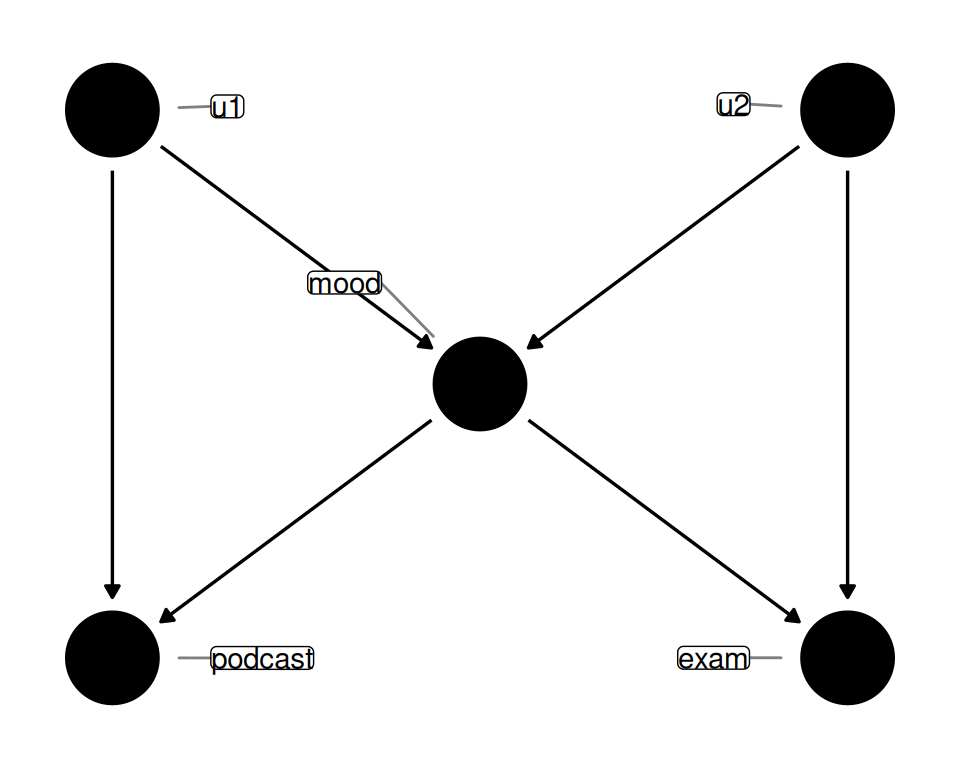
mood 既是碰撞点又是混杂因素。控制 mood 引起的偏倚会打开一条新路径，因为我们也对碰撞点进行了条件化。缺少 u1 或 u2 时，无法正确闭合所有后门路径。
现在我们处于两难境地：由于 mood 是混杂因素，需要对其进行控制；但控制 mood 又会打开从 u1 到 u2 的路径。 由于两个变量都未被测量，无法再闭合因对 mood 条件化而打开的路径。 该怎么办？ 事实证明，在不确定时，控制 mood 是两个选择中较好的一个：混杂偏倚往往比碰撞偏倚更严重，而且碰撞点的 M 形结构对轻微偏离很敏感（例如，若实际结构并不完全如此，偏倚通常不会那么严重）(Ding and Miratrix 2015)。
选择偏倚的另一种常见形式来自失访：人们以与暴露和结局有关的方式退出研究。 我们将在?sec-longitudinal重访这一主题。
让我们考虑另一类重要的因果结构：暴露的原因而非结局的原因，以及相反的情况，即结局的原因而非暴露的原因。 在原始 DAG 中加入变量 grader_mood。
podcast_dag5 <- dagify(
podcast ~ mood + humor + prepared,
exam ~ mood + prepared + grader_mood,
coords = time_ordered_coords(
list(
# time point 1
c("prepared", "humor", "mood"),
# time point 2
c("podcast", "grader_mood"),
# time point 3
"exam"
)
),
exposure = "podcast",
outcome = "exam",
labels = c(
podcast = "podcast",
exam = "exam score",
mood = "student\nmood",
humor = "humor",
prepared = "prepared",
grader_mood = "grader\nmood"
)
)
ggdag(podcast_dag5, use_labels = TRUE, use_text = FALSE)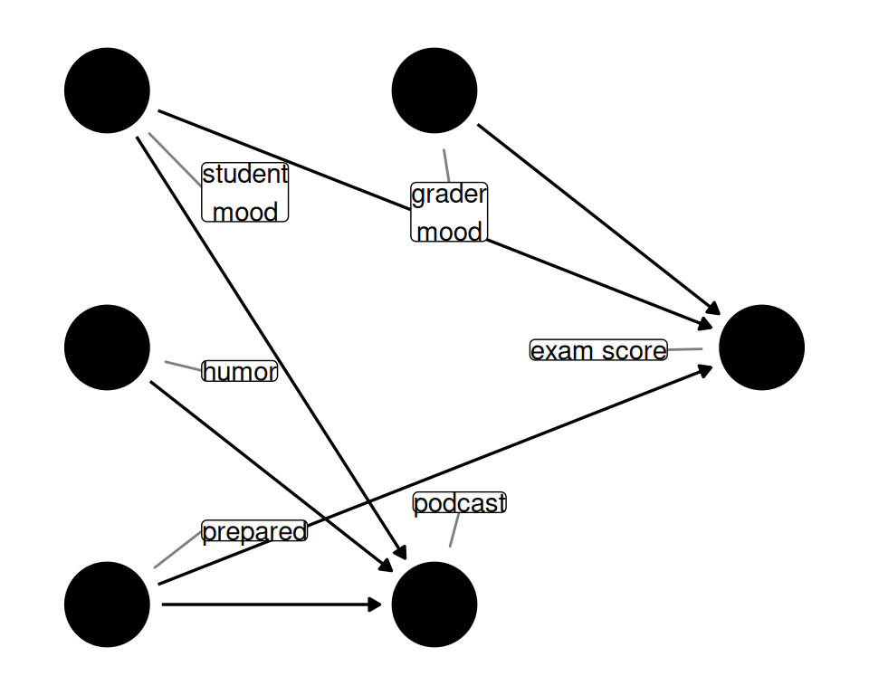
humor），以及结局的原因但不是暴露的原因（grader_mood）。
现在有两个变量并不同时与暴露和结局相关：humor 导致 podcast 但不导致 exam，grader_mood 导致 exam 但不导致 podcast。 先从 humor 开始。
导致暴露但不导致结局的变量也称为工具变量（IV）。 工具变量具有一种不寻常的性质：在某些条件下，控制它们可能会加重其他类型的偏倚。 其独特之处还在于，工具变量也可用于采用一种完全不同的方法估计暴露对结局的无偏效应。 工具变量在计量经济学中常以这种方式使用，在其他领域也越来越流行。 简言之，工具变量分析允许我们使用一套不同于迄今所讨论方法的假设来估计因果效应。 有时，倾向评分方法难以解决的问题可以用工具变量解决，反之亦然。 我们将在 ?sec-iv-friends 中进一步讨论工具变量。
那么，如果不使用工具变量方法，是否应在旨在处理混杂的模型中纳入工具变量？ 如果不确定某变量是否为工具变量，可能应将其加入模型：它更可能是混杂因素而非工具变量，而且实践中加入工具变量所造成的偏倚通常很小。 因此，与调整潜在 M 结构变量类似，混杂带来的偏倚风险更严重 (Myers et al. 2011)。
现在讨论工具变量的相反情形：结局的原因，但不是暴露的原因。 这类变量有时称为竞争暴露（因为它们也导致结局）或精度变量（因为正如我们将看到的，它们会提高因果估计的精度）。 我们将其称为精度变量，因为关注的是它们与当前研究问题的关系，而不是在另一个把它们视为暴露的研究问题中的关系 (Brookhart et al. 2006)。
与工具变量一样，精度变量不位于从暴露到结局的路径上。 因此，纳入它们并非必要。 与工具变量不同，纳入精度变量是有益的。 纳入结局的其他原因，有助于统计模型捕捉结局的部分变异。 这不会影响效应的点估计，但会减小方差，从而产生更小的标准误和更窄的置信区间。 因此，我们建议尽可能纳入它们。
因此，尽管无需控制 grader_mood，但如果数据集中有该变量，就应将其纳入。 类似地，除非认为 humor 确实可能是混杂因素，否则它并不适合加入模型；如果它是有效工具变量，则可以考虑改用工具变量方法估计效应。
DAG 也能帮助我们理解数据误测造成的偏倚，包括最严重的误测：完全没有测量。 我们将在?sec-missingness讨论这些主题；基本思路是，通过区分真实值与观察值，可以更好地理解此类偏倚的表现 (Hernan and Cole 2009)。 下面是一个称为回忆偏倚的基本示例。 回忆偏倚是指结局影响参与者对暴露的记忆，因此在结局发生后才记录既往暴露的回顾性研究中尤其成问题。 癌症病例对照研究便可能出现这种情况。 与未患癌症者相比，患有癌症者可能更有动力反复回想过去的暴露。 因此，他们对某项暴露的记忆可能比未患癌症者更为细致。
error_dag <- dagify(
exposure_observed ~ exposure_real + exposure_error,
outcome_observed ~ outcome_real + outcome_error,
outcome_real ~ exposure_real,
exposure_error ~ outcome_real,
labels = c(
exposure_real = "Exposure\n(truth)",
exposure_error = "Measurement Error\n(exposure)",
exposure_observed = "Exposure\n(observed)",
outcome_real = "Outcome\n(truth)",
outcome_error = "Measurement Error\n(outcome)",
outcome_observed = "Outcome\n(observed)"
),
exposure = "exposure_real",
outcome = "outcome_real",
coords = time_ordered_coords()
)
error_dag |>
ggdag(use_text = FALSE, use_labels = TRUE)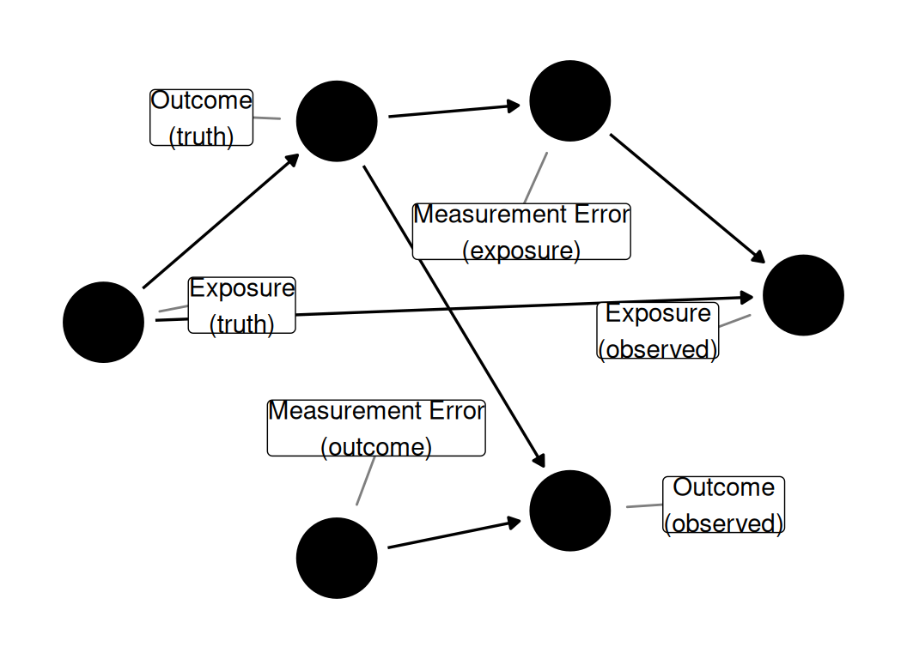
原则上，使用 DAG 很简单：指定认为存在的因果关系，然后查询 DAG 以获取有效调整集等信息。 实践中，构建 DAG 需要投入大量时间和思考。 除定义研究问题本身外，这是开展因果推断最具挑战性的步骤之一。 关于构建 DAG 的最佳实践，目前指导非常有限。 Tennant et al. (2020) 收集了应用健康研究中 DAG 的数据，以更好地理解研究者如何使用它们。 Table 4.1 展示了所收集的部分信息：DAG 中节点和弧数量的中位数、二者之比、DAG 的饱和比例，以及完全饱和 DAG 的数量。 使 DAG 饱和意味着添加所有可能沿时间向前的箭头；例如，在完全饱和的 DAG 中，时间点 1 的任一变量都会指向未来各时间点的所有变量，依此类推。 大多数 DAG 的饱和程度仅约一半，完全饱和的 DAG 极少。
使用 DAG 的论文中，只有约一半报告了所用调整集。 换言之，研究者展示了对研究问题的假设，却没有说明这些假设对建模阶段应如何处理意味着什么，也没有说明是否确实使用了有效调整集。 类似地，大多数研究没有报告关注的目标估计量。
目标估计量是我们试图估计的关注目标，第 2对此作了简要讨论。 我们将在?sec-estimands详细讨论目标估计量。
| Characteristic | N = 1441 |
|---|---|
| DAG properties | |
| Number of Nodes | 12 (9, 16) |
| Number of Arcs | 29 (19, 42) |
| Node to Arc Ratio | 2.30 (1.75, 3.00) |
| Saturation Proportion | 0.46 (0.31, 0.67) |
| Fully Saturated | |
| Yes | 4 (3%) |
| No | 140 (97%) |
| Reporting | |
| Reported Estimand | |
| Yes | 40 (28%) |
| No | 104 (72%) |
| Reported Adjustment Set | |
| Yes | 80 (56%) |
| No | 64 (44%) |
| 1 Median (Q1, Q3); n (%) | |
本节将结合 Tennant et al. (2020) 和我们自身构建 DAG 的经验提供一些建议。
为了提高结果质量，最好的做法之一是在开展研究前构建 DAG，最好甚至在收集数据前就完成。 如果已经开始处理数据，至少应在数据分析前构建 DAG。 这一建议与预注册分析计划的理念相似：提前声明假设有助于明确需要做什么，降低过拟合风险（例如错误地从数据中确定混杂因素），并留出时间获得对 DAG 的反馈。
最后一项益处十分重要：理想情况下，应让更多人参与 DAG 的讨论。 尽早并经常与熟悉数据、领域和模型的专家分享 DAG。 创建 DAG、向同事展示后才意识到遗漏了重要内容，是很自然的事情。 有时，大家只能就结构的部分细节达成一致。 这反而是好事：现在你知道 DAG 的不确定性位于何处。 随后可以考察多个合理 DAG 的结果，或使用敏感性分析处理这种不确定性。
如果有多个候选 DAG，请检查其调整集。 如果两个 DAG 存在相同的调整集，应优先考虑这些集合；这样便可以在满足现有合理假设的情况下继续推进。
正如 Figure 4.19 所示，使用某些数据回答某些问题可能很困难，而另一些问题则更容易处理。 你应准确思考自己想要估计什么。 定义目标估计值是一个重要主题，也是?sec-estimands的内容。
DAG 与问题之间关系的另一个重要细节是人群和时间。 许多因果结构并非在时间和空间上保持静态。 以肺癌为例：吸烟普及前，肺癌病因的分布与后来大不相同。 在中世纪日本，即来自美洲的烟草于数百年后传播开来之前，无论从烟草使用还是其他因素（人群年龄等）来看，肺癌的因果结构实际上都不同于当今日本。
混杂因素也是如此。 即使某种因素能够导致暴露和结局，若它在所分析人群中的流行率为零，就与该因果问题无关。 在某些人群中，它也可能不影响二者之一。 反过来也一样：某种因素可能为目标人群所独有。 数百年前北美的烟草使用在世界人群中十分独特，尽管仪式性烟草使用与现代娱乐性使用大不相同。 许多变化不会像跨越数百年那样剧烈，但有时确实会发生，例如某国法规有效消除了人群对某种因素的暴露。
如前所述，我们建议按时间排列变量，可以从左到右，也可以从上到下。 这样做有两个原因。 第一，时间顺序是各项假设不可分割的一部分。 毕竟，一个事物先于另一个事物发生，是前者成为后者原因的必要条件。 仔细思考这一点将使 DAG 及需要处理的变量更加清晰。
第二，当复杂度达到一定程度后，按时间排列的 DAG 更容易阅读，因为时间维度已融入布局，无需额外思考。 ggdag 的时间顺序算法可以自动完成其中大部分工作，不过正如前面所见，有时向它提供更多顺序信息会有所帮助。
一个相关主题是反馈环 (Murray and Kunicki 2022)。 我们常把两个相互导致的事物想象成循环发生，例如全球变暖与空调使用（空调使用加剧全球变暖，气温因此升高，继而增加空调使用，依此类推）。 人们很容易想把这种关系可视化如下：
dagify(
ac_use ~ global_temp,
global_temp ~ ac_use,
labels = c(ac_use = "A/C use", global_temp = "Global\ntemperature")
) |>
ggdag(
layout = "circle",
edge_type = "arc",
use_text = FALSE,
use_labels = TRUE
)Warning in tidy_dagitty(.dagitty, ...): Graph contains a cycle and is not a valid DAG.
! Cycle detected: ac_use -> global_temp -> ac_use
ℹ Causal diagram algorithms require acyclic graphs.
ℹ Consider revising your DAG specification.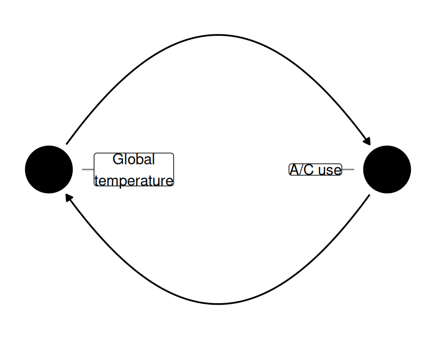
从 DAG 的角度看，这存在问题，原因就在 DAG 中的 A：它形成了环！ 更重要的是，从因果角度看它也不正确。 反馈环只是对真实过程的简写；实际发生的是两个变量随时间相互影响。 因果关系只沿时间向前，因此像 Figure 4.28 那样来回循环并不合理。
真实 DAG 大致如下：
dagify(
global_temp_2000 ~ ac_use_1990 + global_temp_1990,
ac_use_2000 ~ ac_use_1990 + global_temp_1990,
global_temp_2010 ~ ac_use_2000 + global_temp_2000,
ac_use_2010 ~ ac_use_2000 + global_temp_2000,
global_temp_2020 ~ ac_use_2010 + global_temp_2010,
ac_use_2020 ~ ac_use_2010 + global_temp_2010,
coords = time_ordered_coords(),
labels = c(
ac_use_1990 = "A/C use\n(1990)",
global_temp_1990 = "Global\ntemperature\n(1990)",
ac_use_2000 = "A/C use\n(2000)",
global_temp_2000 = "Global\ntemperature\n(2000)",
ac_use_2010 = "A/C use\n(2010)",
global_temp_2010 = "Global\ntemperature\n(2010)",
ac_use_2020 = "A/C use\n(2020)",
global_temp_2020 = "Global\ntemperature\n(2020)"
)
) |>
ggdag(use_text = FALSE, use_labels = TRUE)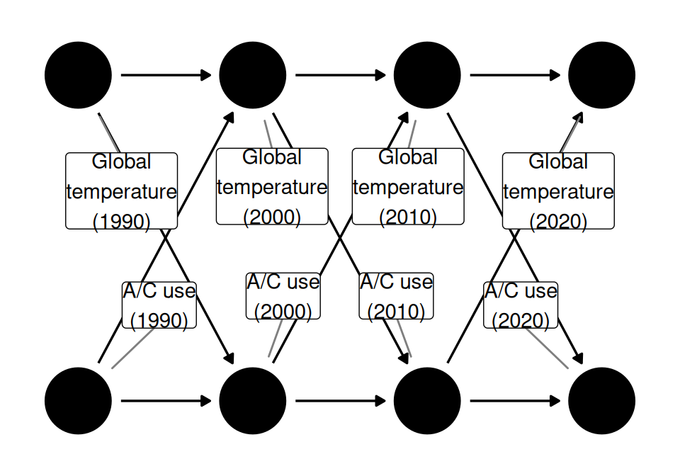
这两个变量实际上并不处于”反向馈送”的反馈环，而是处于”向前馈送”的前馈环：它们随时间共同演化。 这里仅展示四个离散时间点（1990 至 2020 年的四个十年），但当然可以根据问题和数据划分得更细。
与任何 DAG 一样，适当的分析方法取决于问题。 2000 年空调使用对 2020 年全球气温的效应，与 2000 年全球气温对 2020 年空调使用的效应，会产生不同的调整集。 类似地，是同时对随时间的变化建模，还是只对这两个时间点建模，也取决于问题。 这类前馈关系通常要求处理时变混杂，我们将在?sec-longitudinal讨论。
正如 Figure 4.19 所示，考虑数据收集的方式与考虑问题的因果结构同样重要。 如果使用的是”现成”数据，即并非有意为回答研究问题而收集的数据集，就尤其需要考虑完整的数据收集过程。 我们始终天然地以拥有的数据而非缺失的数据为条件。 如果因果结构中的其他变量影响了数据收集过程，就需要考虑其影响。 是否需要控制额外变量？ 是否需要改变试图估计的效应？ 这个问题究竟能否回答？
病例对照研究是流行病学中的一种标准研究设计。 当所研究结局罕见或需要很长时间才会发生（如许多类型的癌症）时，病例对照研究很有优势。 参与者根据其结局被选入研究：某人一旦发生事件，就作为病例纳入，并与一名尚未发生该事件的对照相匹配。 通常还会按其他因素进行匹配。
匹配病例对照研究在设计上就存在选择偏倚 (Mansournia et al. 2013)。 在 Figure 4.30 中，当以是否入选研究为条件时，即使控制 confounder，也无法闭合所有后门路径。 从 DAG 看，整个设计似乎都无效！
dagify(
outcome ~ confounder + exposure,
selection ~ outcome + confounder,
exposure ~ confounder,
exposure = "exposure",
outcome = "outcome",
coords = time_ordered_coords()
) |>
ggdag(edge_type = "arc", text_size = 2.2)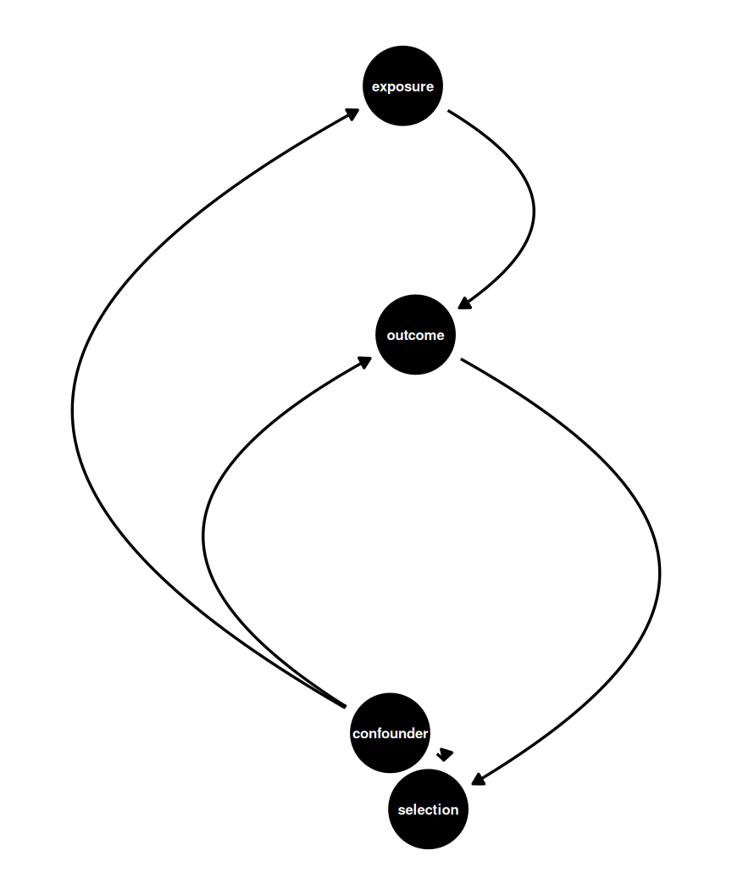
幸运的是，情况并非完全如此。 病例对照研究能够估计的因果效应类型确实有限（因果比值比，在某些情况下近似因果风险比）。 通过仔细的研究设计和抽样，数学推导能够保证这些估计仍然有效。 病例对照研究究竟为何以及如何奏效超出本书范围，但它确实是一种极为巧妙的设计。
关键是要纳入对因果结构重要的所有变量，而不仅是数据中已经测量的变量。 ggdag 可以将变量标记为未测量（“latent”），随后只返回可用的调整集，例如不含未测量变量的集合。 当然，最好的做法是一开始就使用 DAG 帮助确定应测量什么，但实际数据可能因多种原因有所不同。 即使数据是专门为研究问题收集的，也可能缺少一个在数据收集后才发现的混杂因素。
例如，若某 DAG 中 exposure 与 outcome 之间有一条由 confounder1 和 confounder2 构成的混杂路径，控制任一变量都能成功消除估计偏倚：
dagify(
outcome ~ exposure + confounder1,
exposure ~ confounder2,
confounder2 ~ confounder1,
exposure = "exposure",
outcome = "outcome"
) |>
adjustmentSets(){ confounder1 }
{ confounder2 }因此，如果只有一个变量缺失（latent），仍然没有问题：
dagify(
outcome ~ exposure + confounder1,
exposure ~ confounder2,
confounder2 ~ confounder1,
exposure = "exposure",
outcome = "outcome",
latent = "confounder1"
) |>
adjustmentSets(){ confounder2 }但如果二者都缺失，就不存在有效调整集。
当某个变量未被测量时，仍有几种选择。 如上所述，可能能够识别替代调整集。 如果完全闭合所有后门路径必须依赖该缺失变量，则可以而且应当开展敏感性分析，以了解缺少它所造成的影响。 这是?sec-sensitivity的主题。
在某些幸运情况下，还可以使用代理混杂因素 (Miao et al. 2018)。 代理混杂因素是与真实混杂因素密切相关的变量，因此控制它能够控制缺失变量的部分效应。 考虑基本混杂关系的一种扩展：q 有一个原因 p，如 Figure 4.31 所示。 从技术上讲，如果没有 q，就无法闭合后门路径，效应会存在偏倚。 但在实践中，如果 p 与 q 高度相关，就可以用它减少 q 所造成的混杂。 可以把 p 看作 q 的误测版本；它很少能完全控制经 q 产生的偏倚，但有助于将偏倚降至最低。
dagify(
y ~ x + q,
x ~ q,
q ~ p,
coords = time_ordered_coords()
) |>
ggdag(edge_type = "arc")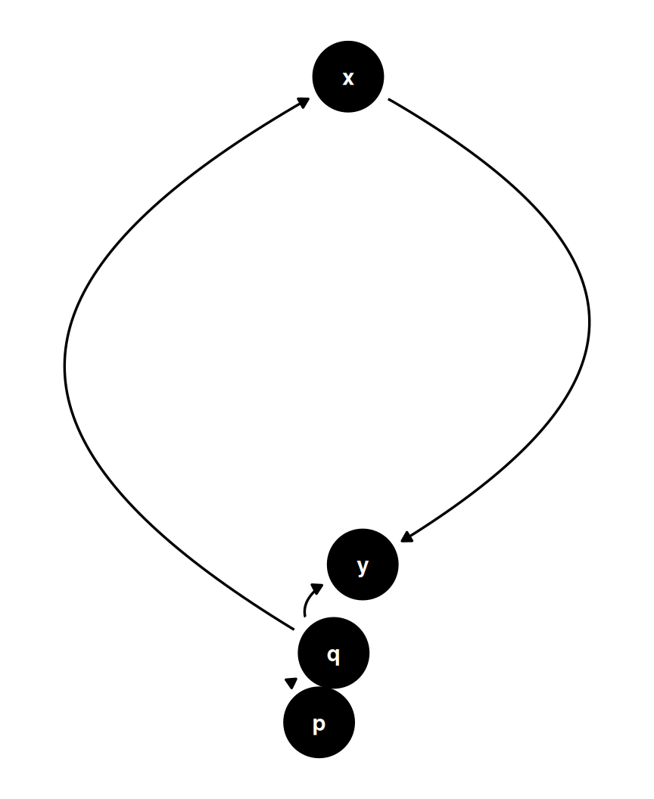
q 和代理混杂因素 p 的 DAG。真实调整集为 q。由于 p 导致 q，它包含有关 q 的信息；在未测量 q 时，可以减少偏倚。
讨论 Table 4.1 时，我们提到了饱和 DAG。 这类 DAG 根据时间顺序纳入所有可能的箭头，例如每个变量都导致时间上位于其后的变量。
不纳入一条箭头，是比纳入它更强的假设。 换言之，默认做法应是在一个变量与未来变量之间添加箭头。 这项默认原则对许多人来说有违直觉。 为什么评估因果效应时需要如此谨慎，却可以在 DAG 中如此宽松地应用因果假设？ 答案在于原因的强度和普遍程度。 从技术上讲，存在一条箭头意味着至少对一个观测单位，前一个节点会导致后一个节点。 箭头同样不说明关系的强度。 因此，即使仅对一个个体产生极小的因果效应，也足以证明箭头应当存在。 实践中，这种情况可能并不相关。 从实际效果看，可以认为没有箭头。
换言之，该假设表示至少一个研究单位存在个体因果效应。 如果变量 X 有一条箭头指向 Y，就表示对于至少一个人，在研究所涉及的 X 取值之间，其潜在结局 Y(X = x) 会发生变化。 用 Table 3.2 的例子来说，若不存在箭头，则每名个体的 y_chocolate - y_vanilla 都为 0。
当研究中的所有单位都不存在个体因果效应时，称为尖锐零假设。
不过，更重要的一点是，你应该有信心添加箭头。 证明添加箭头合理所需的门槛远低于你的想象。 更有帮助的做法是：1）确定时间顺序；2）使 DAG 饱和；3）修剪掉不合理的箭头。
让我们通过播客–考试 DAG 的饱和版本进行尝试。
首先确定时间顺序。 可以推定，学生的幽默感早在考试当天之前就已形成。 当天早晨的情绪也先于收听播客或取得考试成绩，准备程度亦是如此。 给定该顺序，饱和 DAG 如下：
podcast_dag_sat <- dagify(
podcast ~ mood + humor + prepared,
exam ~ mood + prepared + humor,
prepared ~ humor,
mood ~ humor,
coords = time_ordered_coords(
list(
"humor",
c("prepared", "mood"),
"podcast",
"exam"
)
),
exposure = "podcast",
outcome = "exam",
labels = c(
podcast = "podcast",
exam = "exam score",
mood = "mood",
humor = "humor",
prepared = "prepared"
)
)
curvatures <- rep(0, 8)
curvatures[1] <- 0.25
podcast_dag_sat |>
tidy_dagitty() |>
ggplot(aes(x, y, xend = xend, yend = yend)) +
geom_dag_point() +
geom_dag_edges_arc(curvature = curvatures) +
geom_dag_label_repel()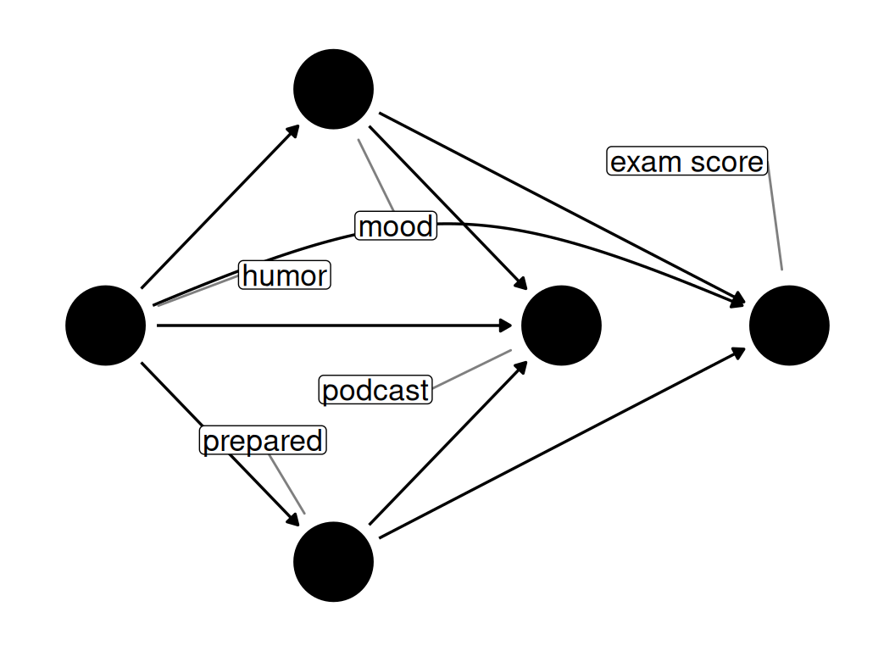
podcast_dag 的饱和版本：变量具有所有可能随时间向前指向其他变量的箭头。
这里出现了几条新箭头。 幽默感现在会导致另外两个混杂因素以及考试成绩。 其中一些关系很合理。 对某些人而言，幽默感很可能影响情绪。 那么准备程度呢？ 这种关系似乎不太合理。 类似地，我们知道本例中幽默感不会影响考试成绩，因为评分采用盲法。 让我们修剪掉后两条箭头。
podcast_dag_pruned <- dagify(
podcast ~ mood + humor + prepared,
exam ~ mood + prepared,
mood ~ humor,
coords = time_ordered_coords(
list(
"humor",
c("prepared", "mood"),
"podcast",
"exam"
)
),
exposure = "podcast",
outcome = "exam",
labels = c(
podcast = "podcast",
exam = "exam score",
mood = "mood",
humor = "humor",
prepared = "prepared"
)
)
ggdag(podcast_dag_pruned, use_text = FALSE, use_labels = TRUE)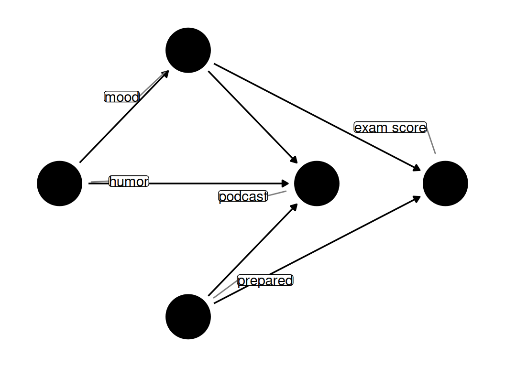
这个 DAG 看起来更合理。 那么，原始 DAG 是否错误？ 这取决于多个因素。 值得注意的是，两个 DAG 产生相同的调整集：只要任一 DAG 正确，控制 mood 和 prepared 都会得到无偏效应。 即使新 DAG 产生不同的调整集，结果是否存在有意义的差异也取决于混杂强度。
从技术上讲，无需在 DAG 中纳入工具变量和精度变量。 无论是否纳入，调整集都相同。 不过，添加它们有两个好处。 第一，它们展示了你对其自身关系及其与研究变量关系的假设。 如上所述，不纳入箭头是比纳入箭头更强的假设，因此这些信息有助于说明你认为因果结构如何运作。 第二，它们会影响建模决策。 应始终在模型中纳入精度变量，以减小估计的变异；将其放入 DAG 有助于识别这些变量。 展示工具变量也很有帮助，因为它们可能引导替代性或互补性建模策略，我们将在 ?sec-evidence 中讨论。
如上所示，缺失和测量误差可能是偏倚来源。 正如?sec-missingness将介绍的，我们有多种策略处理这种情况。 然而，几乎所有测量都在某种程度上不准确。 手头数据的真实 DAG 天然以变量的测量版本为条件。 从这个意义上说，数据总是存在细微错误，像一个不可靠的叙述者。 什么时候应把这些信息纳入 DAG？ 我们建议首先关注 DAG 的因果结构，就像每个变量都得到了完美测量一样 (Hernán and Robins 2021)。 随后再考虑误测和缺失如何影响实际数据，尤其是暴露、结局和关键混杂因素。 可以将其作为替代 DAG 展示，以考虑处理这些来源所致偏倚的策略，例如插补或敏感性分析。 毕竟，Figure 4.27 中的 DAG 会让人认为问题无法回答，因为没有办法闭合所有后门路径。 与所有开放路径一样，这取决于偏倚的严重程度以及我们处理它的能力。
选择调整集时，测量误差是一项重要考虑因素。 理论上，如果 DAG 正确，任何调整集都能产生无偏结果。 实践中，变量的质量各不相同。 应选择最有可能成功的调整集，因为其中包含测量准确的变量。 类似地，也值得考虑非最小调整集，因为后门路径上多个存在测量误差的变量合在一起，可能足以将该路径造成的实际偏倚降至最低。
如果某些关键变量未被测量，因而不存在有效调整集，该怎么办？ 这种情况下，应选择最有可能减少其他后门路径偏倚的调整集。 没有测量每个混杂因素并不意味着全盘失败：尽可能获得最高质量的估计，然后针对未测量变量开展敏感性分析以了解其影响。
最后，我们建议检查 DAG 的稳健性。 在大多数条件下，永远无法验证 DAG 的正确性，但可以利用 DAG 所蕴含的推论为其提供支持。 根据具体情况，三类稳健性检查可能有所帮助。
我们将在?sec-sensitivity详细讨论这些方法。 需要注意的是，它们应作为初始 DAG 的补充，而不是用来取代初始 DAG。 事实上，如果分析中使用多个调整集，就应报告所有调整集的结果，以避免使结果对数据过拟合。
关于 DAG 有一个重要但很少有人注意的细节：dag 在澳大利亚也是一种带有亲昵意味的骂人话，原指绵羊身上沾满粪便的结块羊毛，即 daglock。↩︎